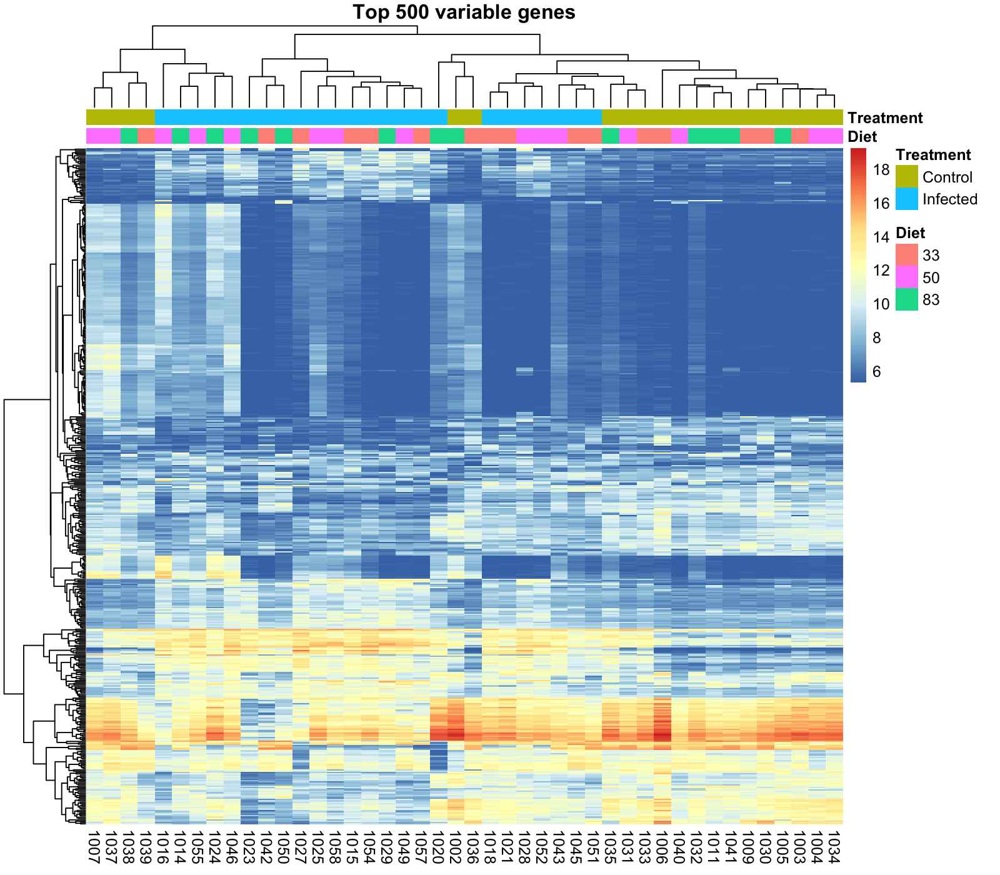
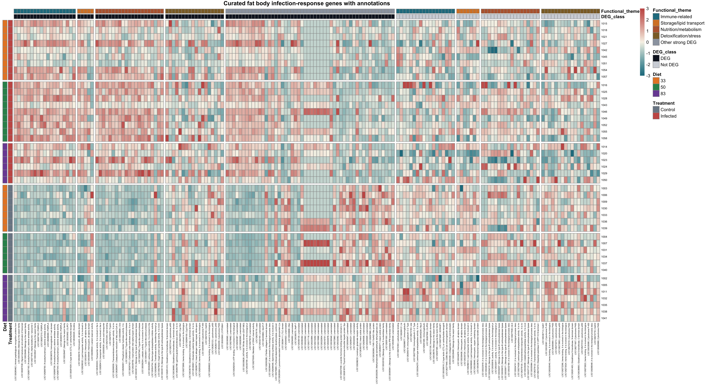
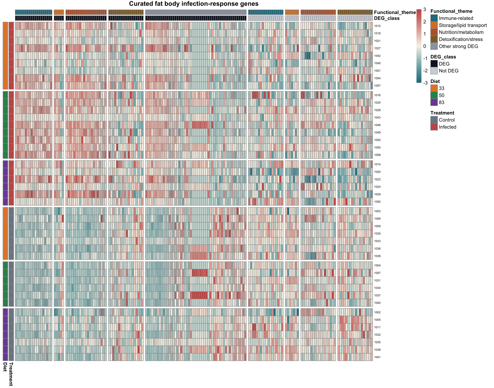
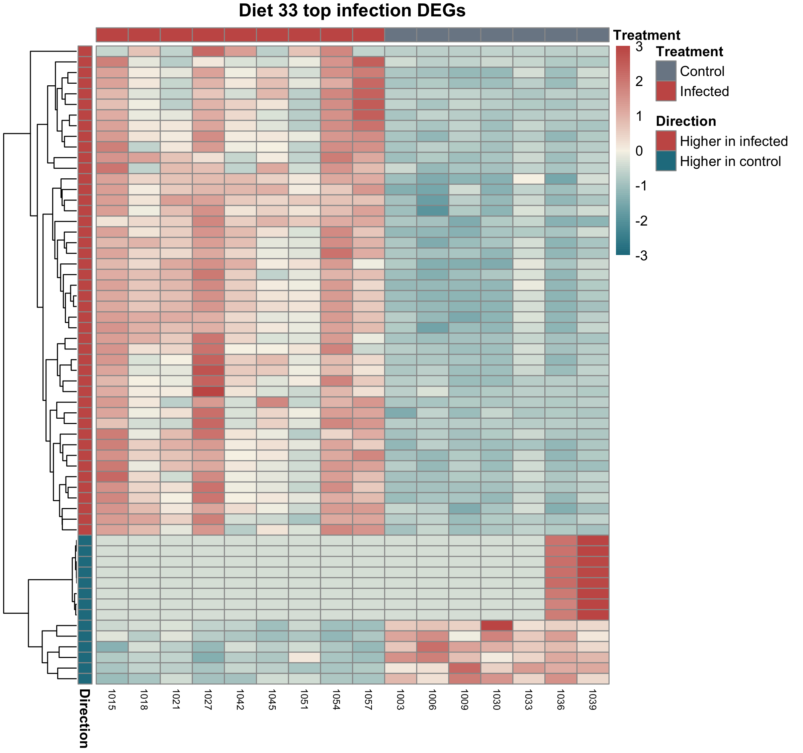
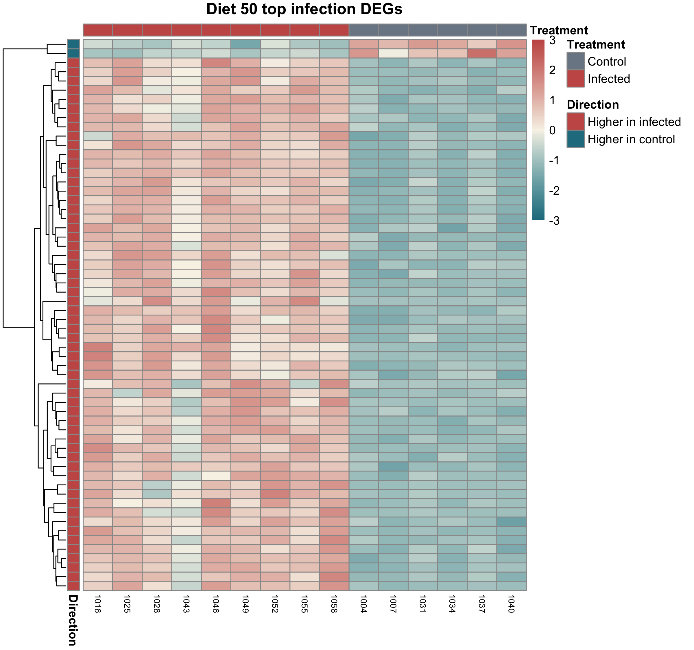
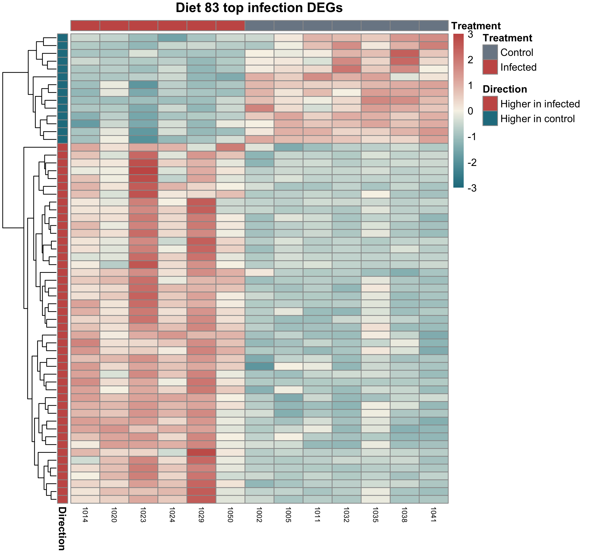
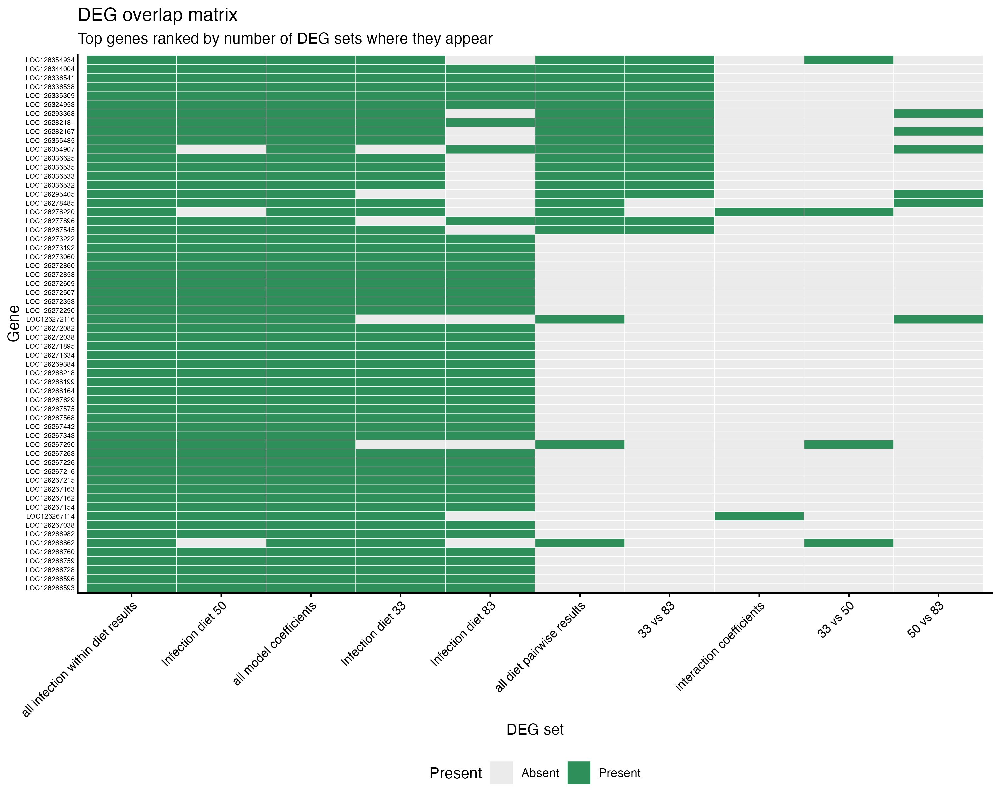
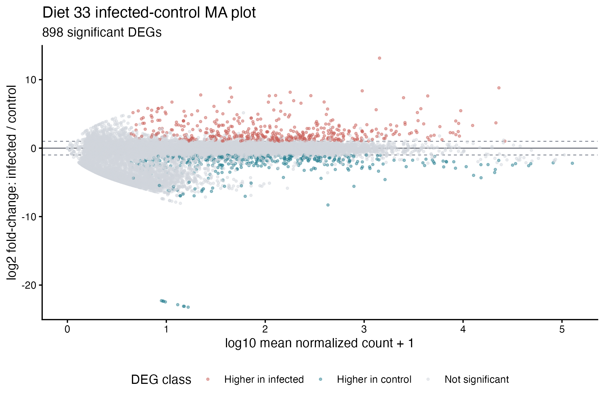

Last updated: 2026-07-03
Checks: 7 0
Knit directory:
gregaria-diet-infection-interaction/
This reproducible R Markdown analysis was created with workflowr (version 1.7.2). The Checks tab describes the reproducibility checks that were applied when the results were created. The Past versions tab lists the development history.
Great! Since the R Markdown file has been committed to the Git repository, you know the exact version of the code that produced these results.
Great job! The global environment was empty. Objects defined in the global environment can affect the analysis in your R Markdown file in unknown ways. For reproduciblity it’s best to always run the code in an empty environment.
The command set.seed(20260427) was run prior to running
the code in the R Markdown file. Setting a seed ensures that any results
that rely on randomness, e.g. subsampling or permutations, are
reproducible.
Great job! Recording the operating system, R version, and package versions is critical for reproducibility.
Nice! There were no cached chunks for this analysis, so you can be confident that you successfully produced the results during this run.
Great job! Using relative paths to the files within your workflowr project makes it easier to run your code on other machines.
Great! You are using Git for version control. Tracking code development and connecting the code version to the results is critical for reproducibility.
The results in this page were generated with repository version 4ef2181. See the Past versions tab to see a history of the changes made to the R Markdown and HTML files.
Note that you need to be careful to ensure that all relevant files for
the analysis have been committed to Git prior to generating the results
(you can use wflow_publish or
wflow_git_commit). workflowr only checks the R Markdown
file, but you know if there are other scripts or data files that it
depends on. Below is the status of the Git repository when the results
were generated:
Ignored files:
Ignored: data/raw_read_counts/DESeq2_output/overlap_DEGs/
Ignored: scripts/.RData
Ignored: scripts/.Rhistory
Untracked files:
Untracked: analysis/10-go-term-enrichment.Rmd
Untracked: analysis/11-outlier-sensitivity.Rmd
Untracked: data/excluded_loci/
Untracked: data/raw_read_counts/master_counts_no_rRNA.csv
Untracked: data/raw_read_counts/master_counts_no_rRNA.tsv
Untracked: data/raw_read_counts/master_counts_no_rRNA_manifest.csv
Untracked: data/raw_read_counts/master_counts_removed_rRNA_genes.csv
Untracked: data/reference/
Untracked: manuscript/
Untracked: output/.DS_Store
Untracked: output/rmd_runs/.DS_Store
Untracked: output/rmd_runs/count-qc-exploration_20260703-223312/
Untracked: output/rmd_runs/deg-overlap-prioritization_20260703-223441/
Untracked: output/rmd_runs/deseq2-interaction-model_20260703-223319/
Untracked: output/rmd_runs/diet-pairwise-deg_All_20260703-223341/
Untracked: output/rmd_runs/go-term-enrichment_20260703-223536/
Untracked: output/rmd_runs/infection-within-diet-deg_20260703-223400/
Untracked: output/rmd_runs/outlier-sensitivity_20260703-223601/
Untracked: output/rmd_runs/outliers-load-enrichment_20260703-223450/
Untracked: output/rmd_runs/publication-figures_20260703-223133/
Untracked: output/rmd_runs/study-design-data_20260703-223304/
Untracked: output/rmd_runs/workflow-reproducibility_20260703-223306/
Untracked: scripts/legacy/
Unstaged changes:
Modified: .DS_Store
Modified: analysis/01-study-design-data.Rmd
Modified: analysis/02-workflow-reproducibility.Rmd
Modified: analysis/03-count-qc-exploration.Rmd
Modified: analysis/04-deseq2-interaction-model.Rmd
Modified: analysis/05-diet-pairwise-deg.Rmd
Modified: analysis/06-infection-within-diet-deg.Rmd
Modified: analysis/07-deg-overlap-prioritization.Rmd
Modified: analysis/09-outliers-load-enrichment.Rmd
Modified: analysis/_site.yml
Deleted: analysis/csv-overlap.R
Deleted: analysis/filter-csv.R
Modified: analysis/index.Rmd
Deleted: analysis/make_control_table.R
Modified: data/.DS_Store
Modified: data/GO_Annotations/.DS_Store
Deleted: data/GO_Annotations/GCF_021461385.2_iqSchPice1.1_Arthopoda_one2one.emapper.annotations
Deleted: data/GO_Annotations/GCF_021461395.2_iqSchAmer2.1_Arthopoda_one2one.emapper.annotations
Deleted: data/GO_Annotations/GCF_023864275.1_iqSchCanc2.1_Arthopoda_one2one.emapper.annotations
Deleted: data/GO_Annotations/GCF_023864345.2_iqSchSeri2.2_Arthopoda_one2one.emapper.annotations
Deleted: data/GO_Annotations/GCF_023898315.1_iqSchNite1.1_Arthopoda_one2one.emapper.annotations
Deleted: data/GO_Annotations/blast2go_americana.annot
Deleted: data/GO_Annotations/blast2go_americana.txt
Deleted: data/GO_Annotations/blast2go_americana_custom.txt
Deleted: data/GO_Annotations/blast2go_cancellata.annot
Deleted: data/GO_Annotations/blast2go_cancellata.txt
Deleted: data/GO_Annotations/blast2go_cancellata_custom.txt
Deleted: data/GO_Annotations/blast2go_cubense.annot
Deleted: data/GO_Annotations/blast2go_cubense.txt
Deleted: data/GO_Annotations/blast2go_cubense_custom.txt
Deleted: data/GO_Annotations/blast2go_nitens.annot
Deleted: data/GO_Annotations/blast2go_nitens.txt
Deleted: data/GO_Annotations/blast2go_nitens_custom.txt
Deleted: data/GO_Annotations/blast2go_piceifrons.annot
Deleted: data/GO_Annotations/blast2go_piceifrons_custom.txt
Deleted: data/GO_Annotations/install_depedencies.R
Deleted: data/raw_read_counts/merge-matrices.sh
Deleted: match_3_description.R
Deleted: match_by_description.R
Deleted: output/rmd_runs/count-qc-exploration_20260703-134559/filter_summary.csv
Deleted: output/rmd_runs/count-qc-exploration_20260703-134559/library_size.csv
Deleted: output/rmd_runs/count-qc-exploration_20260703-134625/filter_summary.csv
Deleted: output/rmd_runs/count-qc-exploration_20260703-134625/library_size.csv
Deleted: output/rmd_runs/count-qc-exploration_20260703-134625/pca_vst.png
Deleted: output/rmd_runs/count-qc-exploration_20260703-134625/sample_distance_heatmap.png
Deleted: output/rmd_runs/count-qc-exploration_20260703-134625/sessionInfo.txt
Deleted: output/rmd_runs/count-qc-exploration_20260703-134625/top_variable_gene_heatmap.png
Deleted: output/rmd_runs/count-qc-exploration_20260703-134921/filter_summary.csv
Deleted: output/rmd_runs/count-qc-exploration_20260703-134921/library_size.csv
Deleted: output/rmd_runs/count-qc-exploration_20260703-134921/pca_vst.png
Deleted: output/rmd_runs/count-qc-exploration_20260703-134921/sample_distance_heatmap.png
Deleted: output/rmd_runs/count-qc-exploration_20260703-134921/sessionInfo.txt
Deleted: output/rmd_runs/count-qc-exploration_20260703-135555/filter_summary.csv
Deleted: output/rmd_runs/count-qc-exploration_20260703-135555/library_size.csv
Deleted: output/rmd_runs/count-qc-exploration_20260703-135555/pca_vst.png
Deleted: output/rmd_runs/count-qc-exploration_20260703-135555/sample_distance_heatmap.png
Deleted: output/rmd_runs/count-qc-exploration_20260703-135555/sessionInfo.txt
Deleted: output/rmd_runs/count-qc-exploration_20260703-142417/filter_summary.csv
Deleted: output/rmd_runs/count-qc-exploration_20260703-142417/library_size.csv
Deleted: output/rmd_runs/count-qc-exploration_20260703-142417/pca_vst.png
Deleted: output/rmd_runs/count-qc-exploration_20260703-142417/sample_distance_heatmap.png
Deleted: output/rmd_runs/count-qc-exploration_20260703-142417/sessionInfo.txt
Deleted: output/rmd_runs/count-qc-exploration_20260703-142714/filter_summary.csv
Deleted: output/rmd_runs/count-qc-exploration_20260703-142714/library_size.csv
Deleted: output/rmd_runs/count-qc-exploration_20260703-142714/pca_vst.png
Deleted: output/rmd_runs/count-qc-exploration_20260703-142714/sample_distance_heatmap.png
Deleted: output/rmd_runs/count-qc-exploration_20260703-142714/sessionInfo.txt
Deleted: output/rmd_runs/count-qc-exploration_20260703-145004/filter_summary.csv
Deleted: output/rmd_runs/count-qc-exploration_20260703-145004/library_size.csv
Deleted: output/rmd_runs/count-qc-exploration_20260703-145004/pca_vst.png
Deleted: output/rmd_runs/count-qc-exploration_20260703-145004/sample_distance_heatmap.png
Deleted: output/rmd_runs/count-qc-exploration_20260703-145004/sessionInfo.txt
Deleted: output/rmd_runs/count-qc-exploration_20260703-145116/filter_summary.csv
Deleted: output/rmd_runs/count-qc-exploration_20260703-145116/library_size.csv
Deleted: output/rmd_runs/count-qc-exploration_20260703-145116/pca_vst.png
Deleted: output/rmd_runs/count-qc-exploration_20260703-145116/sample_distance_heatmap.png
Deleted: output/rmd_runs/count-qc-exploration_20260703-145116/sessionInfo.txt
Deleted: output/rmd_runs/deg-overlap-prioritization_20260703-134732/deg_overlap_matrix.png
Deleted: output/rmd_runs/deg-overlap-prioritization_20260703-134732/deg_presence_absence_matrix.csv
Deleted: output/rmd_runs/deg-overlap-prioritization_20260703-134732/deg_set_summary.csv
Deleted: output/rmd_runs/deg-overlap-prioritization_20260703-134732/genes_seen_in_two_or_more_sets.csv
Deleted: output/rmd_runs/deg-overlap-prioritization_20260703-134732/sessionInfo.txt
Deleted: output/rmd_runs/deg-overlap-prioritization_20260703-135038/deg_overlap_matrix.png
Deleted: output/rmd_runs/deg-overlap-prioritization_20260703-135038/deg_presence_absence_matrix.csv
Deleted: output/rmd_runs/deg-overlap-prioritization_20260703-135038/deg_set_summary.csv
Deleted: output/rmd_runs/deg-overlap-prioritization_20260703-135038/genes_seen_in_two_or_more_sets.csv
Deleted: output/rmd_runs/deg-overlap-prioritization_20260703-135038/sessionInfo.txt
Deleted: output/rmd_runs/deg-overlap-prioritization_20260703-135715/deg_overlap_matrix.png
Deleted: output/rmd_runs/deg-overlap-prioritization_20260703-135715/deg_presence_absence_matrix.csv
Deleted: output/rmd_runs/deg-overlap-prioritization_20260703-135715/deg_set_summary.csv
Deleted: output/rmd_runs/deg-overlap-prioritization_20260703-135715/genes_seen_in_two_or_more_sets.csv
Deleted: output/rmd_runs/deg-overlap-prioritization_20260703-135715/sessionInfo.txt
Deleted: output/rmd_runs/deg-overlap-prioritization_20260703-142532/deg_overlap_matrix.png
Deleted: output/rmd_runs/deg-overlap-prioritization_20260703-142532/deg_presence_absence_matrix.csv
Deleted: output/rmd_runs/deg-overlap-prioritization_20260703-142532/deg_set_summary.csv
Deleted: output/rmd_runs/deg-overlap-prioritization_20260703-142532/genes_seen_in_two_or_more_sets.csv
Deleted: output/rmd_runs/deg-overlap-prioritization_20260703-142532/sessionInfo.txt
Deleted: output/rmd_runs/deg-overlap-prioritization_20260703-142827/deg_overlap_matrix.png
Deleted: output/rmd_runs/deg-overlap-prioritization_20260703-142827/deg_presence_absence_matrix.csv
Deleted: output/rmd_runs/deg-overlap-prioritization_20260703-142827/deg_set_summary.csv
Deleted: output/rmd_runs/deg-overlap-prioritization_20260703-142827/genes_seen_in_two_or_more_sets.csv
Deleted: output/rmd_runs/deg-overlap-prioritization_20260703-142827/sessionInfo.txt
Deleted: output/rmd_runs/deg-overlap-prioritization_20260703-145233/deg_overlap_matrix.png
Deleted: output/rmd_runs/deg-overlap-prioritization_20260703-145233/deg_presence_absence_matrix.csv
Deleted: output/rmd_runs/deg-overlap-prioritization_20260703-145233/deg_set_summary.csv
Deleted: output/rmd_runs/deg-overlap-prioritization_20260703-145233/genes_seen_in_two_or_more_sets.csv
Deleted: output/rmd_runs/deg-overlap-prioritization_20260703-145233/sessionInfo.txt
Deleted: output/rmd_runs/deg-overlap-prioritization_20260703-152630/deg_intersection_size_barplot.png
Deleted: output/rmd_runs/deg-overlap-prioritization_20260703-152630/deg_intersection_summary.csv
Deleted: output/rmd_runs/deg-overlap-prioritization_20260703-152630/deg_overlap_matrix.png
Deleted: output/rmd_runs/deg-overlap-prioritization_20260703-152630/deg_presence_absence_matrix.csv
Deleted: output/rmd_runs/deg-overlap-prioritization_20260703-152630/deg_set_size_barplot.png
Deleted: output/rmd_runs/deg-overlap-prioritization_20260703-152630/deg_set_summary.csv
Deleted: output/rmd_runs/deg-overlap-prioritization_20260703-152630/genes_seen_in_two_or_more_sets.csv
Deleted: output/rmd_runs/deg-overlap-prioritization_20260703-152630/sessionInfo.txt
Deleted: output/rmd_runs/deg-overlap-prioritization_20260703-152717/deg_intersection_size_barplot.png
Deleted: output/rmd_runs/deg-overlap-prioritization_20260703-152717/deg_intersection_summary.csv
Deleted: output/rmd_runs/deg-overlap-prioritization_20260703-152717/deg_overlap_matrix.png
Deleted: output/rmd_runs/deg-overlap-prioritization_20260703-152717/deg_presence_absence_matrix.csv
Deleted: output/rmd_runs/deg-overlap-prioritization_20260703-152717/deg_set_size_barplot.png
Deleted: output/rmd_runs/deg-overlap-prioritization_20260703-152717/deg_set_summary.csv
Deleted: output/rmd_runs/deg-overlap-prioritization_20260703-152717/genes_seen_in_two_or_more_sets.csv
Deleted: output/rmd_runs/deg-overlap-prioritization_20260703-152717/sessionInfo.txt
Deleted: output/rmd_runs/deg-overlap-prioritization_20260703-152742/deg_intersection_size_barplot.png
Deleted: output/rmd_runs/deg-overlap-prioritization_20260703-152742/deg_intersection_summary.csv
Deleted: output/rmd_runs/deg-overlap-prioritization_20260703-152742/deg_overlap_matrix.png
Deleted: output/rmd_runs/deg-overlap-prioritization_20260703-152742/deg_presence_absence_matrix.csv
Deleted: output/rmd_runs/deg-overlap-prioritization_20260703-152742/deg_set_size_barplot.png
Deleted: output/rmd_runs/deg-overlap-prioritization_20260703-152742/deg_set_summary.csv
Deleted: output/rmd_runs/deg-overlap-prioritization_20260703-152742/genes_seen_in_two_or_more_sets.csv
Deleted: output/rmd_runs/deg-overlap-prioritization_20260703-152742/sessionInfo.txt
Deleted: output/rmd_runs/deseq2-interaction-model_20260703-134627/all_model_coefficients.csv
Deleted: output/rmd_runs/deseq2-interaction-model_20260703-134627/deseq2_coefficients.txt
Deleted: output/rmd_runs/deseq2-interaction-model_20260703-134627/interaction_coefficients.csv
Deleted: output/rmd_runs/deseq2-interaction-model_20260703-134627/interaction_model_pca.png
Deleted: output/rmd_runs/deseq2-interaction-model_20260703-134627/sessionInfo.txt
Deleted: output/rmd_runs/deseq2-interaction-model_20260703-134627/significant_gene_counts.csv
Deleted: output/rmd_runs/deseq2-interaction-model_20260703-134927/all_model_coefficients.csv
Deleted: output/rmd_runs/deseq2-interaction-model_20260703-134927/deseq2_coefficients.txt
Deleted: output/rmd_runs/deseq2-interaction-model_20260703-134927/interaction_coefficients.csv
Deleted: output/rmd_runs/deseq2-interaction-model_20260703-134927/interaction_model_pca.png
Deleted: output/rmd_runs/deseq2-interaction-model_20260703-134927/sessionInfo.txt
Deleted: output/rmd_runs/deseq2-interaction-model_20260703-134927/significant_gene_counts.csv
Deleted: output/rmd_runs/deseq2-interaction-model_20260703-135601/all_model_coefficients.csv
Deleted: output/rmd_runs/deseq2-interaction-model_20260703-135601/deseq2_coefficients.txt
Deleted: output/rmd_runs/deseq2-interaction-model_20260703-135601/interaction_coefficients.csv
Deleted: output/rmd_runs/deseq2-interaction-model_20260703-135601/interaction_model_pca.png
Deleted: output/rmd_runs/deseq2-interaction-model_20260703-135601/sessionInfo.txt
Deleted: output/rmd_runs/deseq2-interaction-model_20260703-135601/significant_gene_counts.csv
Deleted: output/rmd_runs/deseq2-interaction-model_20260703-142423/all_model_coefficients.csv
Deleted: output/rmd_runs/deseq2-interaction-model_20260703-142423/deseq2_coefficients.txt
Deleted: output/rmd_runs/deseq2-interaction-model_20260703-142423/interaction_coefficients.csv
Deleted: output/rmd_runs/deseq2-interaction-model_20260703-142423/interaction_model_pca.png
Deleted: output/rmd_runs/deseq2-interaction-model_20260703-142423/sessionInfo.txt
Deleted: output/rmd_runs/deseq2-interaction-model_20260703-142423/significant_gene_counts.csv
Deleted: output/rmd_runs/deseq2-interaction-model_20260703-142720/all_model_coefficients.csv
Deleted: output/rmd_runs/deseq2-interaction-model_20260703-142720/deseq2_coefficients.txt
Deleted: output/rmd_runs/deseq2-interaction-model_20260703-142720/interaction_coefficients.csv
Deleted: output/rmd_runs/deseq2-interaction-model_20260703-142720/interaction_model_pca.png
Deleted: output/rmd_runs/deseq2-interaction-model_20260703-142720/sessionInfo.txt
Deleted: output/rmd_runs/deseq2-interaction-model_20260703-142720/significant_gene_counts.csv
Deleted: output/rmd_runs/deseq2-interaction-model_20260703-145011/all_model_coefficients.csv
Deleted: output/rmd_runs/deseq2-interaction-model_20260703-145011/deseq2_coefficients.txt
Deleted: output/rmd_runs/deseq2-interaction-model_20260703-145011/interaction_coefficients.csv
Deleted: output/rmd_runs/deseq2-interaction-model_20260703-145011/interaction_model_deg_count_barplot.png
Deleted: output/rmd_runs/deseq2-interaction-model_20260703-145011/interaction_model_direction_counts.csv
Deleted: output/rmd_runs/deseq2-interaction-model_20260703-145011/interaction_model_pca.png
Deleted: output/rmd_runs/deseq2-interaction-model_20260703-145011/sessionInfo.txt
Deleted: output/rmd_runs/deseq2-interaction-model_20260703-145011/significant_gene_counts.csv
Deleted: output/rmd_runs/deseq2-interaction-model_20260703-145122/all_model_coefficients.csv
Deleted: output/rmd_runs/deseq2-interaction-model_20260703-145122/deseq2_coefficients.txt
Deleted: output/rmd_runs/deseq2-interaction-model_20260703-145122/interaction_coefficients.csv
Deleted: output/rmd_runs/deseq2-interaction-model_20260703-145122/interaction_model_deg_count_barplot.png
Deleted: output/rmd_runs/deseq2-interaction-model_20260703-145122/interaction_model_direction_counts.csv
Deleted: output/rmd_runs/deseq2-interaction-model_20260703-145122/interaction_model_pca.png
Deleted: output/rmd_runs/deseq2-interaction-model_20260703-145122/sessionInfo.txt
Deleted: output/rmd_runs/deseq2-interaction-model_20260703-145122/significant_gene_counts.csv
Deleted: output/rmd_runs/deseq2-interaction-model_20260703-150850/all_model_coefficients.csv
Deleted: output/rmd_runs/deseq2-interaction-model_20260703-150850/deseq2_coefficients.txt
Deleted: output/rmd_runs/deseq2-interaction-model_20260703-150850/interaction_coefficients.csv
Deleted: output/rmd_runs/deseq2-interaction-model_20260703-150850/interaction_model_deg_count_barplot.png
Deleted: output/rmd_runs/deseq2-interaction-model_20260703-150850/interaction_model_direction_counts.csv
Deleted: output/rmd_runs/deseq2-interaction-model_20260703-150850/interaction_model_pca.png
Deleted: output/rmd_runs/deseq2-interaction-model_20260703-150850/sessionInfo.txt
Deleted: output/rmd_runs/deseq2-interaction-model_20260703-150850/significant_gene_counts.csv
Deleted: output/rmd_runs/diet-pairwise-deg_All_20260703-134650/DESeq2_33_vs_50.csv
Deleted: output/rmd_runs/diet-pairwise-deg_All_20260703-134650/DESeq2_33_vs_83.csv
Deleted: output/rmd_runs/diet-pairwise-deg_All_20260703-134650/DESeq2_50_vs_83.csv
Deleted: output/rmd_runs/diet-pairwise-deg_All_20260703-134650/all_diet_pairwise_results.csv
Deleted: output/rmd_runs/diet-pairwise-deg_All_20260703-134650/diet_pairwise_summary.csv
Deleted: output/rmd_runs/diet-pairwise-deg_All_20260703-134650/sessionInfo.txt
Deleted: output/rmd_runs/diet-pairwise-deg_All_20260703-134650/significant_genes_33_vs_50.txt
Deleted: output/rmd_runs/diet-pairwise-deg_All_20260703-134650/significant_genes_33_vs_83.txt
Deleted: output/rmd_runs/diet-pairwise-deg_All_20260703-134650/significant_genes_50_vs_83.txt
Deleted: output/rmd_runs/diet-pairwise-deg_All_20260703-134952/DESeq2_33_vs_50.csv
Deleted: output/rmd_runs/diet-pairwise-deg_All_20260703-134952/DESeq2_33_vs_83.csv
Deleted: output/rmd_runs/diet-pairwise-deg_All_20260703-134952/DESeq2_50_vs_83.csv
Deleted: output/rmd_runs/diet-pairwise-deg_All_20260703-134952/all_diet_pairwise_results.csv
Deleted: output/rmd_runs/diet-pairwise-deg_All_20260703-134952/diet_pairwise_summary.csv
Deleted: output/rmd_runs/diet-pairwise-deg_All_20260703-134952/sessionInfo.txt
Deleted: output/rmd_runs/diet-pairwise-deg_All_20260703-134952/significant_genes_33_vs_50.txt
Deleted: output/rmd_runs/diet-pairwise-deg_All_20260703-134952/significant_genes_33_vs_83.txt
Deleted: output/rmd_runs/diet-pairwise-deg_All_20260703-134952/significant_genes_50_vs_83.txt
Deleted: output/rmd_runs/diet-pairwise-deg_All_20260703-135627/DESeq2_33_vs_50.csv
Deleted: output/rmd_runs/diet-pairwise-deg_All_20260703-135627/DESeq2_33_vs_83.csv
Deleted: output/rmd_runs/diet-pairwise-deg_All_20260703-135627/DESeq2_50_vs_83.csv
Deleted: output/rmd_runs/diet-pairwise-deg_All_20260703-135627/all_diet_pairwise_results.csv
Deleted: output/rmd_runs/diet-pairwise-deg_All_20260703-135627/diet_pairwise_summary.csv
Deleted: output/rmd_runs/diet-pairwise-deg_All_20260703-135627/sessionInfo.txt
Deleted: output/rmd_runs/diet-pairwise-deg_All_20260703-135627/significant_genes_33_vs_50.txt
Deleted: output/rmd_runs/diet-pairwise-deg_All_20260703-135627/significant_genes_33_vs_83.txt
Deleted: output/rmd_runs/diet-pairwise-deg_All_20260703-135627/significant_genes_50_vs_83.txt
Deleted: output/rmd_runs/diet-pairwise-deg_All_20260703-142448/DESeq2_33_vs_50.csv
Deleted: output/rmd_runs/diet-pairwise-deg_All_20260703-142448/DESeq2_33_vs_83.csv
Deleted: output/rmd_runs/diet-pairwise-deg_All_20260703-142448/DESeq2_50_vs_83.csv
Deleted: output/rmd_runs/diet-pairwise-deg_All_20260703-142448/all_diet_pairwise_results.csv
Deleted: output/rmd_runs/diet-pairwise-deg_All_20260703-142448/diet_pairwise_summary.csv
Deleted: output/rmd_runs/diet-pairwise-deg_All_20260703-142448/sessionInfo.txt
Deleted: output/rmd_runs/diet-pairwise-deg_All_20260703-142448/significant_genes_33_vs_50.txt
Deleted: output/rmd_runs/diet-pairwise-deg_All_20260703-142448/significant_genes_33_vs_83.txt
Deleted: output/rmd_runs/diet-pairwise-deg_All_20260703-142448/significant_genes_50_vs_83.txt
Deleted: output/rmd_runs/diet-pairwise-deg_All_20260703-142744/DESeq2_33_vs_50.csv
Deleted: output/rmd_runs/diet-pairwise-deg_All_20260703-142744/DESeq2_33_vs_83.csv
Deleted: output/rmd_runs/diet-pairwise-deg_All_20260703-142744/DESeq2_50_vs_83.csv
Deleted: output/rmd_runs/diet-pairwise-deg_All_20260703-142744/all_diet_pairwise_results.csv
Deleted: output/rmd_runs/diet-pairwise-deg_All_20260703-142744/diet_pairwise_summary.csv
Deleted: output/rmd_runs/diet-pairwise-deg_All_20260703-142744/sessionInfo.txt
Deleted: output/rmd_runs/diet-pairwise-deg_All_20260703-142744/significant_genes_33_vs_50.txt
Deleted: output/rmd_runs/diet-pairwise-deg_All_20260703-142744/significant_genes_33_vs_83.txt
Deleted: output/rmd_runs/diet-pairwise-deg_All_20260703-142744/significant_genes_50_vs_83.txt
Deleted: output/rmd_runs/diet-pairwise-deg_All_20260703-145036/DESeq2_33_vs_50.csv
Deleted: output/rmd_runs/diet-pairwise-deg_All_20260703-145036/DESeq2_33_vs_83.csv
Deleted: output/rmd_runs/diet-pairwise-deg_All_20260703-145036/DESeq2_50_vs_83.csv
Deleted: output/rmd_runs/diet-pairwise-deg_All_20260703-145036/all_diet_pairwise_results.csv
Deleted: output/rmd_runs/diet-pairwise-deg_All_20260703-145036/significant_genes_33_vs_50.txt
Deleted: output/rmd_runs/diet-pairwise-deg_All_20260703-145036/significant_genes_33_vs_83.txt
Deleted: output/rmd_runs/diet-pairwise-deg_All_20260703-145036/significant_genes_50_vs_83.txt
Deleted: output/rmd_runs/diet-pairwise-deg_All_20260703-145146/DESeq2_33_vs_50.csv
Deleted: output/rmd_runs/diet-pairwise-deg_All_20260703-145146/DESeq2_33_vs_83.csv
Deleted: output/rmd_runs/diet-pairwise-deg_All_20260703-145146/DESeq2_50_vs_83.csv
Deleted: output/rmd_runs/diet-pairwise-deg_All_20260703-145146/all_diet_pairwise_results.csv
Deleted: output/rmd_runs/diet-pairwise-deg_All_20260703-145146/diet_pairwise_deg_count_barplot.png
Deleted: output/rmd_runs/diet-pairwise-deg_All_20260703-145146/diet_pairwise_direction_counts.csv
Deleted: output/rmd_runs/diet-pairwise-deg_All_20260703-145146/diet_pairwise_summary.csv
Deleted: output/rmd_runs/diet-pairwise-deg_All_20260703-145146/sessionInfo.txt
Deleted: output/rmd_runs/diet-pairwise-deg_All_20260703-145146/significant_genes_33_vs_50.txt
Deleted: output/rmd_runs/diet-pairwise-deg_All_20260703-145146/significant_genes_33_vs_83.txt
Deleted: output/rmd_runs/diet-pairwise-deg_All_20260703-145146/significant_genes_50_vs_83.txt
Deleted: output/rmd_runs/diet-pairwise-deg_All_20260703-150915/DESeq2_33_vs_50.csv
Deleted: output/rmd_runs/diet-pairwise-deg_All_20260703-150915/DESeq2_33_vs_83.csv
Deleted: output/rmd_runs/diet-pairwise-deg_All_20260703-150915/DESeq2_50_vs_83.csv
Deleted: output/rmd_runs/diet-pairwise-deg_All_20260703-150915/all_diet_pairwise_results.csv
Deleted: output/rmd_runs/diet-pairwise-deg_All_20260703-150915/diet_pairwise_deg_count_barplot.png
Deleted: output/rmd_runs/diet-pairwise-deg_All_20260703-150915/diet_pairwise_direction_counts.csv
Deleted: output/rmd_runs/diet-pairwise-deg_All_20260703-150915/diet_pairwise_summary.csv
Deleted: output/rmd_runs/diet-pairwise-deg_All_20260703-150915/sessionInfo.txt
Deleted: output/rmd_runs/diet-pairwise-deg_All_20260703-150915/significant_genes_33_vs_50.txt
Deleted: output/rmd_runs/diet-pairwise-deg_All_20260703-150915/significant_genes_33_vs_83.txt
Deleted: output/rmd_runs/diet-pairwise-deg_All_20260703-150915/significant_genes_50_vs_83.txt
Deleted: output/rmd_runs/infection-within-diet-deg_20260703-134709/DESeq2_infected_vs_control_diet_33.csv
Deleted: output/rmd_runs/infection-within-diet-deg_20260703-134709/DESeq2_infected_vs_control_diet_50.csv
Deleted: output/rmd_runs/infection-within-diet-deg_20260703-134709/DESeq2_infected_vs_control_diet_83.csv
Deleted: output/rmd_runs/infection-within-diet-deg_20260703-134709/all_infection_within_diet_results.csv
Deleted: output/rmd_runs/infection-within-diet-deg_20260703-134709/infection_within_diet_summary.csv
Deleted: output/rmd_runs/infection-within-diet-deg_20260703-134709/sessionInfo.txt
Deleted: output/rmd_runs/infection-within-diet-deg_20260703-134709/significant_genes_infection_diet_33.txt
Deleted: output/rmd_runs/infection-within-diet-deg_20260703-134709/significant_genes_infection_diet_50.txt
Deleted: output/rmd_runs/infection-within-diet-deg_20260703-134709/significant_genes_infection_diet_83.txt
Deleted: output/rmd_runs/infection-within-diet-deg_20260703-135015/DESeq2_infected_vs_control_diet_33.csv
Deleted: output/rmd_runs/infection-within-diet-deg_20260703-135015/DESeq2_infected_vs_control_diet_50.csv
Deleted: output/rmd_runs/infection-within-diet-deg_20260703-135015/DESeq2_infected_vs_control_diet_83.csv
Deleted: output/rmd_runs/infection-within-diet-deg_20260703-135015/all_infection_within_diet_results.csv
Deleted: output/rmd_runs/infection-within-diet-deg_20260703-135015/infection_within_diet_summary.csv
Deleted: output/rmd_runs/infection-within-diet-deg_20260703-135015/sessionInfo.txt
Deleted: output/rmd_runs/infection-within-diet-deg_20260703-135015/significant_genes_infection_diet_33.txt
Deleted: output/rmd_runs/infection-within-diet-deg_20260703-135015/significant_genes_infection_diet_50.txt
Deleted: output/rmd_runs/infection-within-diet-deg_20260703-135015/significant_genes_infection_diet_83.txt
Deleted: output/rmd_runs/infection-within-diet-deg_20260703-135651/DESeq2_infected_vs_control_diet_33.csv
Deleted: output/rmd_runs/infection-within-diet-deg_20260703-135651/DESeq2_infected_vs_control_diet_50.csv
Deleted: output/rmd_runs/infection-within-diet-deg_20260703-135651/DESeq2_infected_vs_control_diet_83.csv
Deleted: output/rmd_runs/infection-within-diet-deg_20260703-135651/all_infection_within_diet_results.csv
Deleted: output/rmd_runs/infection-within-diet-deg_20260703-135651/infection_within_diet_summary.csv
Deleted: output/rmd_runs/infection-within-diet-deg_20260703-135651/sessionInfo.txt
Deleted: output/rmd_runs/infection-within-diet-deg_20260703-135651/significant_genes_infection_diet_33.txt
Deleted: output/rmd_runs/infection-within-diet-deg_20260703-135651/significant_genes_infection_diet_50.txt
Deleted: output/rmd_runs/infection-within-diet-deg_20260703-135651/significant_genes_infection_diet_83.txt
Deleted: output/rmd_runs/infection-within-diet-deg_20260703-142510/DESeq2_infected_vs_control_diet_33.csv
Deleted: output/rmd_runs/infection-within-diet-deg_20260703-142510/DESeq2_infected_vs_control_diet_50.csv
Deleted: output/rmd_runs/infection-within-diet-deg_20260703-142510/DESeq2_infected_vs_control_diet_83.csv
Deleted: output/rmd_runs/infection-within-diet-deg_20260703-142510/all_infection_within_diet_results.csv
Deleted: output/rmd_runs/infection-within-diet-deg_20260703-142510/infection_within_diet_summary.csv
Deleted: output/rmd_runs/infection-within-diet-deg_20260703-142510/sessionInfo.txt
Deleted: output/rmd_runs/infection-within-diet-deg_20260703-142510/significant_genes_infection_diet_33.txt
Deleted: output/rmd_runs/infection-within-diet-deg_20260703-142510/significant_genes_infection_diet_50.txt
Deleted: output/rmd_runs/infection-within-diet-deg_20260703-142510/significant_genes_infection_diet_83.txt
Deleted: output/rmd_runs/infection-within-diet-deg_20260703-142805/DESeq2_infected_vs_control_diet_33.csv
Deleted: output/rmd_runs/infection-within-diet-deg_20260703-142805/DESeq2_infected_vs_control_diet_50.csv
Deleted: output/rmd_runs/infection-within-diet-deg_20260703-142805/DESeq2_infected_vs_control_diet_83.csv
Deleted: output/rmd_runs/infection-within-diet-deg_20260703-142805/all_infection_within_diet_results.csv
Deleted: output/rmd_runs/infection-within-diet-deg_20260703-142805/infection_within_diet_summary.csv
Deleted: output/rmd_runs/infection-within-diet-deg_20260703-142805/sessionInfo.txt
Deleted: output/rmd_runs/infection-within-diet-deg_20260703-142805/significant_genes_infection_diet_33.txt
Deleted: output/rmd_runs/infection-within-diet-deg_20260703-142805/significant_genes_infection_diet_50.txt
Deleted: output/rmd_runs/infection-within-diet-deg_20260703-142805/significant_genes_infection_diet_83.txt
Deleted: output/rmd_runs/infection-within-diet-deg_20260703-145208/DESeq2_infected_vs_control_diet_33.csv
Deleted: output/rmd_runs/infection-within-diet-deg_20260703-145208/DESeq2_infected_vs_control_diet_50.csv
Deleted: output/rmd_runs/infection-within-diet-deg_20260703-145208/DESeq2_infected_vs_control_diet_83.csv
Deleted: output/rmd_runs/infection-within-diet-deg_20260703-145208/all_infection_within_diet_results.csv
Deleted: output/rmd_runs/infection-within-diet-deg_20260703-145208/infection_within_diet_deg_count_barplot.png
Deleted: output/rmd_runs/infection-within-diet-deg_20260703-145208/infection_within_diet_direction_counts.csv
Deleted: output/rmd_runs/infection-within-diet-deg_20260703-145208/infection_within_diet_summary.csv
Deleted: output/rmd_runs/infection-within-diet-deg_20260703-145208/sessionInfo.txt
Deleted: output/rmd_runs/infection-within-diet-deg_20260703-145208/significant_genes_infection_diet_33.txt
Deleted: output/rmd_runs/infection-within-diet-deg_20260703-145208/significant_genes_infection_diet_50.txt
Deleted: output/rmd_runs/infection-within-diet-deg_20260703-145208/significant_genes_infection_diet_83.txt
Deleted: output/rmd_runs/infection-within-diet-deg_20260703-145208/vst_pca_condition_centroids.csv
Deleted: output/rmd_runs/infection-within-diet-deg_20260703-145208/vst_pca_condition_centroids.png
Deleted: output/rmd_runs/infection-within-diet-deg_20260703-145208/vst_pca_sample_scores.csv
Deleted: output/rmd_runs/infection-within-diet-deg_20260703-145208/vst_top_variable_gene_heatmap.png
Deleted: output/rmd_runs/infection-within-diet-deg_20260703-150938/DESeq2_infected_vs_control_diet_33.csv
Deleted: output/rmd_runs/infection-within-diet-deg_20260703-150938/DESeq2_infected_vs_control_diet_50.csv
Deleted: output/rmd_runs/infection-within-diet-deg_20260703-150938/DESeq2_infected_vs_control_diet_83.csv
Deleted: output/rmd_runs/infection-within-diet-deg_20260703-150938/all_infection_within_diet_results.csv
Deleted: output/rmd_runs/infection-within-diet-deg_20260703-150938/curated_infection_deg_heatmap_genes.csv
Deleted: output/rmd_runs/infection-within-diet-deg_20260703-150938/diet_33_infection_deg_pca.png
Deleted: output/rmd_runs/infection-within-diet-deg_20260703-150938/diet_33_infection_deg_pca_centroids.csv
Deleted: output/rmd_runs/infection-within-diet-deg_20260703-150938/diet_33_infection_deg_pca_scores.csv
Deleted: output/rmd_runs/infection-within-diet-deg_20260703-150938/diet_50_infection_deg_pca.png
Deleted: output/rmd_runs/infection-within-diet-deg_20260703-150938/diet_50_infection_deg_pca_centroids.csv
Deleted: output/rmd_runs/infection-within-diet-deg_20260703-150938/diet_50_infection_deg_pca_scores.csv
Deleted: output/rmd_runs/infection-within-diet-deg_20260703-150938/diet_83_infection_deg_pca.png
Deleted: output/rmd_runs/infection-within-diet-deg_20260703-150938/diet_83_infection_deg_pca_centroids.csv
Deleted: output/rmd_runs/infection-within-diet-deg_20260703-150938/diet_83_infection_deg_pca_scores.csv
Deleted: output/rmd_runs/infection-within-diet-deg_20260703-150938/infection_within_diet_deg_count_barplot.png
Deleted: output/rmd_runs/infection-within-diet-deg_20260703-150938/infection_within_diet_direction_counts.csv
Deleted: output/rmd_runs/infection-within-diet-deg_20260703-150938/infection_within_diet_summary.csv
Deleted: output/rmd_runs/infection-within-diet-deg_20260703-150938/sessionInfo.txt
Deleted: output/rmd_runs/infection-within-diet-deg_20260703-150938/significant_genes_infection_diet_33.txt
Deleted: output/rmd_runs/infection-within-diet-deg_20260703-150938/significant_genes_infection_diet_50.txt
Deleted: output/rmd_runs/infection-within-diet-deg_20260703-150938/significant_genes_infection_diet_83.txt
Deleted: output/rmd_runs/infection-within-diet-deg_20260703-150938/vst_pca_condition_centroids.csv
Deleted: output/rmd_runs/infection-within-diet-deg_20260703-150938/vst_pca_condition_centroids.png
Deleted: output/rmd_runs/infection-within-diet-deg_20260703-150938/vst_pca_sample_scores.csv
Deleted: output/rmd_runs/infection-within-diet-deg_20260703-150938/vst_top_variable_gene_heatmap.png
Deleted: output/rmd_runs/infection-within-diet-deg_20260703-151336/DESeq2_infected_vs_control_diet_33.csv
Deleted: output/rmd_runs/infection-within-diet-deg_20260703-151336/DESeq2_infected_vs_control_diet_50.csv
Deleted: output/rmd_runs/infection-within-diet-deg_20260703-151336/DESeq2_infected_vs_control_diet_83.csv
Deleted: output/rmd_runs/infection-within-diet-deg_20260703-151336/all_infection_within_diet_results.csv
Deleted: output/rmd_runs/infection-within-diet-deg_20260703-151336/curated_infection_deg_heatmap_genes.csv
Deleted: output/rmd_runs/infection-within-diet-deg_20260703-151336/diet_33_infection_deg_pca.png
Deleted: output/rmd_runs/infection-within-diet-deg_20260703-151336/diet_33_infection_deg_pca_centroids.csv
Deleted: output/rmd_runs/infection-within-diet-deg_20260703-151336/diet_33_infection_deg_pca_scores.csv
Deleted: output/rmd_runs/infection-within-diet-deg_20260703-151336/diet_50_infection_deg_pca.png
Deleted: output/rmd_runs/infection-within-diet-deg_20260703-151336/diet_50_infection_deg_pca_centroids.csv
Deleted: output/rmd_runs/infection-within-diet-deg_20260703-151336/diet_50_infection_deg_pca_scores.csv
Deleted: output/rmd_runs/infection-within-diet-deg_20260703-151336/diet_83_infection_deg_pca.png
Deleted: output/rmd_runs/infection-within-diet-deg_20260703-151336/diet_83_infection_deg_pca_centroids.csv
Deleted: output/rmd_runs/infection-within-diet-deg_20260703-151336/diet_83_infection_deg_pca_scores.csv
Deleted: output/rmd_runs/infection-within-diet-deg_20260703-151336/infection_within_diet_deg_count_barplot.png
Deleted: output/rmd_runs/infection-within-diet-deg_20260703-151336/infection_within_diet_direction_counts.csv
Deleted: output/rmd_runs/infection-within-diet-deg_20260703-151336/infection_within_diet_summary.csv
Deleted: output/rmd_runs/infection-within-diet-deg_20260703-151336/sessionInfo.txt
Deleted: output/rmd_runs/infection-within-diet-deg_20260703-151336/significant_genes_infection_diet_33.txt
Deleted: output/rmd_runs/infection-within-diet-deg_20260703-151336/significant_genes_infection_diet_50.txt
Deleted: output/rmd_runs/infection-within-diet-deg_20260703-151336/significant_genes_infection_diet_83.txt
Deleted: output/rmd_runs/infection-within-diet-deg_20260703-151336/vst_pca_condition_centroids.csv
Deleted: output/rmd_runs/infection-within-diet-deg_20260703-151336/vst_pca_condition_centroids.png
Deleted: output/rmd_runs/infection-within-diet-deg_20260703-151336/vst_pca_sample_scores.csv
Deleted: output/rmd_runs/infection-within-diet-deg_20260703-151336/vst_top_variable_gene_heatmap.png
Deleted: output/rmd_runs/infection-within-diet-deg_20260703-151451/DESeq2_infected_vs_control_diet_33.csv
Deleted: output/rmd_runs/infection-within-diet-deg_20260703-151451/DESeq2_infected_vs_control_diet_50.csv
Deleted: output/rmd_runs/infection-within-diet-deg_20260703-151451/DESeq2_infected_vs_control_diet_83.csv
Deleted: output/rmd_runs/infection-within-diet-deg_20260703-151451/all_infection_within_diet_results.csv
Deleted: output/rmd_runs/infection-within-diet-deg_20260703-151451/curated_infection_deg_heatmap_genes.csv
Deleted: output/rmd_runs/infection-within-diet-deg_20260703-151451/curated_infection_deg_vst_heatmap.png
Deleted: output/rmd_runs/infection-within-diet-deg_20260703-151451/diet_33_infection_deg_pca.png
Deleted: output/rmd_runs/infection-within-diet-deg_20260703-151451/diet_33_infection_deg_pca_centroids.csv
Deleted: output/rmd_runs/infection-within-diet-deg_20260703-151451/diet_33_infection_deg_pca_scores.csv
Deleted: output/rmd_runs/infection-within-diet-deg_20260703-151451/diet_50_infection_deg_pca.png
Deleted: output/rmd_runs/infection-within-diet-deg_20260703-151451/diet_50_infection_deg_pca_centroids.csv
Deleted: output/rmd_runs/infection-within-diet-deg_20260703-151451/diet_50_infection_deg_pca_scores.csv
Deleted: output/rmd_runs/infection-within-diet-deg_20260703-151451/diet_83_infection_deg_pca.png
Deleted: output/rmd_runs/infection-within-diet-deg_20260703-151451/diet_83_infection_deg_pca_centroids.csv
Deleted: output/rmd_runs/infection-within-diet-deg_20260703-151451/diet_83_infection_deg_pca_scores.csv
Deleted: output/rmd_runs/infection-within-diet-deg_20260703-151451/infection_within_diet_deg_count_barplot.png
Deleted: output/rmd_runs/infection-within-diet-deg_20260703-151451/infection_within_diet_direction_counts.csv
Deleted: output/rmd_runs/infection-within-diet-deg_20260703-151451/infection_within_diet_summary.csv
Deleted: output/rmd_runs/infection-within-diet-deg_20260703-151451/sessionInfo.txt
Deleted: output/rmd_runs/infection-within-diet-deg_20260703-151451/significant_genes_infection_diet_33.txt
Deleted: output/rmd_runs/infection-within-diet-deg_20260703-151451/significant_genes_infection_diet_50.txt
Deleted: output/rmd_runs/infection-within-diet-deg_20260703-151451/significant_genes_infection_diet_83.txt
Deleted: output/rmd_runs/infection-within-diet-deg_20260703-151451/vst_pca_condition_centroids.csv
Deleted: output/rmd_runs/infection-within-diet-deg_20260703-151451/vst_pca_condition_centroids.png
Deleted: output/rmd_runs/infection-within-diet-deg_20260703-151451/vst_pca_sample_scores.csv
Deleted: output/rmd_runs/infection-within-diet-deg_20260703-151451/vst_top_variable_gene_heatmap.png
Deleted: output/rmd_runs/infection-within-diet-deg_20260703-152450/DESeq2_infected_vs_control_diet_33.csv
Deleted: output/rmd_runs/infection-within-diet-deg_20260703-152450/DESeq2_infected_vs_control_diet_50.csv
Deleted: output/rmd_runs/infection-within-diet-deg_20260703-152450/DESeq2_infected_vs_control_diet_83.csv
Deleted: output/rmd_runs/infection-within-diet-deg_20260703-152450/all_infection_within_diet_results.csv
Deleted: output/rmd_runs/infection-within-diet-deg_20260703-152450/curated_infection_deg_heatmap_genes.csv
Deleted: output/rmd_runs/infection-within-diet-deg_20260703-152450/curated_infection_deg_vst_heatmap.png
Deleted: output/rmd_runs/infection-within-diet-deg_20260703-152450/diet_33_infection_deg_pca.png
Deleted: output/rmd_runs/infection-within-diet-deg_20260703-152450/diet_33_infection_deg_pca_centroids.csv
Deleted: output/rmd_runs/infection-within-diet-deg_20260703-152450/diet_33_infection_deg_pca_scores.csv
Deleted: output/rmd_runs/infection-within-diet-deg_20260703-152450/diet_50_infection_deg_pca.png
Deleted: output/rmd_runs/infection-within-diet-deg_20260703-152450/diet_50_infection_deg_pca_centroids.csv
Deleted: output/rmd_runs/infection-within-diet-deg_20260703-152450/diet_50_infection_deg_pca_scores.csv
Deleted: output/rmd_runs/infection-within-diet-deg_20260703-152450/diet_83_infection_deg_pca.png
Deleted: output/rmd_runs/infection-within-diet-deg_20260703-152450/diet_83_infection_deg_pca_centroids.csv
Deleted: output/rmd_runs/infection-within-diet-deg_20260703-152450/diet_83_infection_deg_pca_scores.csv
Deleted: output/rmd_runs/infection-within-diet-deg_20260703-152450/infection_within_diet_deg_count_barplot.png
Deleted: output/rmd_runs/infection-within-diet-deg_20260703-152450/infection_within_diet_direction_counts.csv
Deleted: output/rmd_runs/infection-within-diet-deg_20260703-152450/infection_within_diet_summary.csv
Deleted: output/rmd_runs/infection-within-diet-deg_20260703-152450/sessionInfo.txt
Deleted: output/rmd_runs/infection-within-diet-deg_20260703-152450/significant_genes_infection_diet_33.txt
Deleted: output/rmd_runs/infection-within-diet-deg_20260703-152450/significant_genes_infection_diet_50.txt
Deleted: output/rmd_runs/infection-within-diet-deg_20260703-152450/significant_genes_infection_diet_83.txt
Deleted: output/rmd_runs/infection-within-diet-deg_20260703-152450/vst_pca_condition_centroids.csv
Deleted: output/rmd_runs/infection-within-diet-deg_20260703-152450/vst_pca_condition_centroids.png
Deleted: output/rmd_runs/infection-within-diet-deg_20260703-152450/vst_pca_sample_scores.csv
Deleted: output/rmd_runs/infection-within-diet-deg_20260703-152450/vst_top_variable_gene_heatmap.png
Deleted: output/rmd_runs/infection-within-diet-deg_20260703-153743/DESeq2_infected_vs_control_diet_33.csv
Deleted: output/rmd_runs/infection-within-diet-deg_20260703-153743/DESeq2_infected_vs_control_diet_50.csv
Deleted: output/rmd_runs/infection-within-diet-deg_20260703-153743/DESeq2_infected_vs_control_diet_83.csv
Deleted: output/rmd_runs/infection-within-diet-deg_20260703-153743/all_infection_within_diet_results.csv
Deleted: output/rmd_runs/infection-within-diet-deg_20260703-153743/curated_infection_deg_heatmap_genes.csv
Deleted: output/rmd_runs/infection-within-diet-deg_20260703-153743/curated_infection_deg_vst_heatmap.png
Deleted: output/rmd_runs/infection-within-diet-deg_20260703-153743/diet_33_infection_deg_pca.png
Deleted: output/rmd_runs/infection-within-diet-deg_20260703-153743/diet_33_infection_deg_pca_centroids.csv
Deleted: output/rmd_runs/infection-within-diet-deg_20260703-153743/diet_33_infection_deg_pca_scores.csv
Deleted: output/rmd_runs/infection-within-diet-deg_20260703-153743/diet_50_infection_deg_pca.png
Deleted: output/rmd_runs/infection-within-diet-deg_20260703-153743/diet_50_infection_deg_pca_centroids.csv
Deleted: output/rmd_runs/infection-within-diet-deg_20260703-153743/diet_50_infection_deg_pca_scores.csv
Deleted: output/rmd_runs/infection-within-diet-deg_20260703-153743/diet_83_infection_deg_pca.png
Deleted: output/rmd_runs/infection-within-diet-deg_20260703-153743/diet_83_infection_deg_pca_centroids.csv
Deleted: output/rmd_runs/infection-within-diet-deg_20260703-153743/diet_83_infection_deg_pca_scores.csv
Deleted: output/rmd_runs/infection-within-diet-deg_20260703-153743/infection_within_diet_deg_count_barplot.png
Deleted: output/rmd_runs/infection-within-diet-deg_20260703-153743/infection_within_diet_direction_counts.csv
Deleted: output/rmd_runs/infection-within-diet-deg_20260703-153743/infection_within_diet_summary.csv
Deleted: output/rmd_runs/infection-within-diet-deg_20260703-153743/sessionInfo.txt
Deleted: output/rmd_runs/infection-within-diet-deg_20260703-153743/significant_genes_infection_diet_33.txt
Deleted: output/rmd_runs/infection-within-diet-deg_20260703-153743/significant_genes_infection_diet_50.txt
Deleted: output/rmd_runs/infection-within-diet-deg_20260703-153743/significant_genes_infection_diet_83.txt
Deleted: output/rmd_runs/infection-within-diet-deg_20260703-153743/vst_pca_condition_centroids.csv
Deleted: output/rmd_runs/infection-within-diet-deg_20260703-153743/vst_pca_condition_centroids.png
Deleted: output/rmd_runs/infection-within-diet-deg_20260703-153743/vst_pca_sample_scores.csv
Deleted: output/rmd_runs/infection-within-diet-deg_20260703-153743/vst_top_variable_gene_heatmap.png
Deleted: output/rmd_runs/infection-within-diet-deg_20260703-154007/DESeq2_infected_vs_control_diet_33.csv
Deleted: output/rmd_runs/infection-within-diet-deg_20260703-154007/DESeq2_infected_vs_control_diet_50.csv
Deleted: output/rmd_runs/infection-within-diet-deg_20260703-154007/DESeq2_infected_vs_control_diet_83.csv
Deleted: output/rmd_runs/infection-within-diet-deg_20260703-154007/all_infection_within_diet_results.csv
Deleted: output/rmd_runs/infection-within-diet-deg_20260703-154007/curated_infection_deg_heatmap_genes.csv
Deleted: output/rmd_runs/infection-within-diet-deg_20260703-154007/curated_infection_deg_vst_heatmap.png
Deleted: output/rmd_runs/infection-within-diet-deg_20260703-154007/diet_33_infection_deg_pca.png
Deleted: output/rmd_runs/infection-within-diet-deg_20260703-154007/diet_33_infection_deg_pca_centroids.csv
Deleted: output/rmd_runs/infection-within-diet-deg_20260703-154007/diet_33_infection_deg_pca_scores.csv
Deleted: output/rmd_runs/infection-within-diet-deg_20260703-154007/diet_50_infection_deg_pca.png
Deleted: output/rmd_runs/infection-within-diet-deg_20260703-154007/diet_50_infection_deg_pca_centroids.csv
Deleted: output/rmd_runs/infection-within-diet-deg_20260703-154007/diet_50_infection_deg_pca_scores.csv
Deleted: output/rmd_runs/infection-within-diet-deg_20260703-154007/diet_83_infection_deg_pca.png
Deleted: output/rmd_runs/infection-within-diet-deg_20260703-154007/diet_83_infection_deg_pca_centroids.csv
Deleted: output/rmd_runs/infection-within-diet-deg_20260703-154007/diet_83_infection_deg_pca_scores.csv
Deleted: output/rmd_runs/infection-within-diet-deg_20260703-154007/infection_within_diet_deg_count_barplot.png
Deleted: output/rmd_runs/infection-within-diet-deg_20260703-154007/infection_within_diet_direction_counts.csv
Deleted: output/rmd_runs/infection-within-diet-deg_20260703-154007/infection_within_diet_summary.csv
Deleted: output/rmd_runs/infection-within-diet-deg_20260703-154007/sessionInfo.txt
Deleted: output/rmd_runs/infection-within-diet-deg_20260703-154007/significant_genes_infection_diet_33.txt
Deleted: output/rmd_runs/infection-within-diet-deg_20260703-154007/significant_genes_infection_diet_50.txt
Deleted: output/rmd_runs/infection-within-diet-deg_20260703-154007/significant_genes_infection_diet_83.txt
Deleted: output/rmd_runs/infection-within-diet-deg_20260703-154007/vst_pca_condition_centroids.csv
Deleted: output/rmd_runs/infection-within-diet-deg_20260703-154007/vst_pca_condition_centroids.png
Deleted: output/rmd_runs/infection-within-diet-deg_20260703-154007/vst_pca_sample_scores.csv
Deleted: output/rmd_runs/infection-within-diet-deg_20260703-154007/vst_top_variable_gene_heatmap.png
Deleted: output/rmd_runs/infection-within-diet-deg_20260703-154142/DESeq2_infected_vs_control_diet_33.csv
Deleted: output/rmd_runs/infection-within-diet-deg_20260703-154142/DESeq2_infected_vs_control_diet_50.csv
Deleted: output/rmd_runs/infection-within-diet-deg_20260703-154142/DESeq2_infected_vs_control_diet_83.csv
Deleted: output/rmd_runs/infection-within-diet-deg_20260703-154142/all_infection_within_diet_results.csv
Deleted: output/rmd_runs/infection-within-diet-deg_20260703-154142/diet_33_infection_deg_pca.png
Deleted: output/rmd_runs/infection-within-diet-deg_20260703-154142/diet_33_infection_deg_pca_centroids.csv
Deleted: output/rmd_runs/infection-within-diet-deg_20260703-154142/diet_33_infection_deg_pca_scores.csv
Deleted: output/rmd_runs/infection-within-diet-deg_20260703-154142/diet_50_infection_deg_pca.png
Deleted: output/rmd_runs/infection-within-diet-deg_20260703-154142/diet_50_infection_deg_pca_centroids.csv
Deleted: output/rmd_runs/infection-within-diet-deg_20260703-154142/diet_50_infection_deg_pca_scores.csv
Deleted: output/rmd_runs/infection-within-diet-deg_20260703-154142/diet_83_infection_deg_pca.png
Deleted: output/rmd_runs/infection-within-diet-deg_20260703-154142/diet_83_infection_deg_pca_centroids.csv
Deleted: output/rmd_runs/infection-within-diet-deg_20260703-154142/diet_83_infection_deg_pca_scores.csv
Deleted: output/rmd_runs/infection-within-diet-deg_20260703-154142/infection_within_diet_deg_count_barplot.png
Deleted: output/rmd_runs/infection-within-diet-deg_20260703-154142/infection_within_diet_direction_counts.csv
Deleted: output/rmd_runs/infection-within-diet-deg_20260703-154142/significant_genes_infection_diet_33.txt
Deleted: output/rmd_runs/infection-within-diet-deg_20260703-154142/significant_genes_infection_diet_50.txt
Deleted: output/rmd_runs/infection-within-diet-deg_20260703-154142/significant_genes_infection_diet_83.txt
Deleted: output/rmd_runs/infection-within-diet-deg_20260703-154142/vst_pca_condition_centroids.csv
Deleted: output/rmd_runs/infection-within-diet-deg_20260703-154142/vst_pca_condition_centroids.png
Deleted: output/rmd_runs/infection-within-diet-deg_20260703-154142/vst_pca_sample_scores.csv
Deleted: output/rmd_runs/infection-within-diet-deg_20260703-154142/vst_top_variable_gene_heatmap.png
Deleted: output/rmd_runs/infection-within-diet-deg_20260703-154235/DESeq2_infected_vs_control_diet_33.csv
Deleted: output/rmd_runs/infection-within-diet-deg_20260703-154235/DESeq2_infected_vs_control_diet_50.csv
Deleted: output/rmd_runs/infection-within-diet-deg_20260703-154235/DESeq2_infected_vs_control_diet_83.csv
Deleted: output/rmd_runs/infection-within-diet-deg_20260703-154235/all_infection_within_diet_results.csv
Deleted: output/rmd_runs/infection-within-diet-deg_20260703-154235/curated_infection_deg_heatmap_genes.csv
Deleted: output/rmd_runs/infection-within-diet-deg_20260703-154235/curated_infection_deg_vst_heatmap.png
Deleted: output/rmd_runs/infection-within-diet-deg_20260703-154235/diet_33_infection_deg_pca.png
Deleted: output/rmd_runs/infection-within-diet-deg_20260703-154235/diet_33_infection_deg_pca_centroids.csv
Deleted: output/rmd_runs/infection-within-diet-deg_20260703-154235/diet_33_infection_deg_pca_scores.csv
Deleted: output/rmd_runs/infection-within-diet-deg_20260703-154235/diet_50_infection_deg_pca.png
Deleted: output/rmd_runs/infection-within-diet-deg_20260703-154235/diet_50_infection_deg_pca_centroids.csv
Deleted: output/rmd_runs/infection-within-diet-deg_20260703-154235/diet_50_infection_deg_pca_scores.csv
Deleted: output/rmd_runs/infection-within-diet-deg_20260703-154235/diet_83_infection_deg_pca.png
Deleted: output/rmd_runs/infection-within-diet-deg_20260703-154235/diet_83_infection_deg_pca_centroids.csv
Deleted: output/rmd_runs/infection-within-diet-deg_20260703-154235/diet_83_infection_deg_pca_scores.csv
Deleted: output/rmd_runs/infection-within-diet-deg_20260703-154235/infection_within_diet_deg_count_barplot.png
Deleted: output/rmd_runs/infection-within-diet-deg_20260703-154235/infection_within_diet_direction_counts.csv
Deleted: output/rmd_runs/infection-within-diet-deg_20260703-154235/infection_within_diet_summary.csv
Deleted: output/rmd_runs/infection-within-diet-deg_20260703-154235/sessionInfo.txt
Deleted: output/rmd_runs/infection-within-diet-deg_20260703-154235/significant_genes_infection_diet_33.txt
Deleted: output/rmd_runs/infection-within-diet-deg_20260703-154235/significant_genes_infection_diet_50.txt
Deleted: output/rmd_runs/infection-within-diet-deg_20260703-154235/significant_genes_infection_diet_83.txt
Deleted: output/rmd_runs/infection-within-diet-deg_20260703-154235/vst_pca_condition_centroids.csv
Deleted: output/rmd_runs/infection-within-diet-deg_20260703-154235/vst_pca_condition_centroids.png
Deleted: output/rmd_runs/infection-within-diet-deg_20260703-154235/vst_pca_sample_scores.csv
Deleted: output/rmd_runs/infection-within-diet-deg_20260703-154235/vst_top_variable_gene_heatmap.png
Deleted: output/rmd_runs/infection-within-diet-deg_20260703-154433/DESeq2_infected_vs_control_diet_33.csv
Deleted: output/rmd_runs/infection-within-diet-deg_20260703-154433/DESeq2_infected_vs_control_diet_50.csv
Deleted: output/rmd_runs/infection-within-diet-deg_20260703-154433/DESeq2_infected_vs_control_diet_83.csv
Deleted: output/rmd_runs/infection-within-diet-deg_20260703-154433/all_infection_within_diet_results.csv
Deleted: output/rmd_runs/infection-within-diet-deg_20260703-154433/curated_infection_deg_heatmap_genes.csv
Deleted: output/rmd_runs/infection-within-diet-deg_20260703-154433/curated_infection_deg_vst_heatmap.png
Deleted: output/rmd_runs/infection-within-diet-deg_20260703-154433/diet_33_infection_deg_pca.png
Deleted: output/rmd_runs/infection-within-diet-deg_20260703-154433/diet_33_infection_deg_pca_centroids.csv
Deleted: output/rmd_runs/infection-within-diet-deg_20260703-154433/diet_33_infection_deg_pca_scores.csv
Deleted: output/rmd_runs/infection-within-diet-deg_20260703-154433/diet_50_infection_deg_pca.png
Deleted: output/rmd_runs/infection-within-diet-deg_20260703-154433/diet_50_infection_deg_pca_centroids.csv
Deleted: output/rmd_runs/infection-within-diet-deg_20260703-154433/diet_50_infection_deg_pca_scores.csv
Deleted: output/rmd_runs/infection-within-diet-deg_20260703-154433/diet_83_infection_deg_pca.png
Deleted: output/rmd_runs/infection-within-diet-deg_20260703-154433/diet_83_infection_deg_pca_centroids.csv
Deleted: output/rmd_runs/infection-within-diet-deg_20260703-154433/diet_83_infection_deg_pca_scores.csv
Deleted: output/rmd_runs/infection-within-diet-deg_20260703-154433/infection_within_diet_deg_count_barplot.png
Deleted: output/rmd_runs/infection-within-diet-deg_20260703-154433/infection_within_diet_direction_counts.csv
Deleted: output/rmd_runs/infection-within-diet-deg_20260703-154433/infection_within_diet_summary.csv
Deleted: output/rmd_runs/infection-within-diet-deg_20260703-154433/sessionInfo.txt
Deleted: output/rmd_runs/infection-within-diet-deg_20260703-154433/significant_genes_infection_diet_33.txt
Deleted: output/rmd_runs/infection-within-diet-deg_20260703-154433/significant_genes_infection_diet_50.txt
Deleted: output/rmd_runs/infection-within-diet-deg_20260703-154433/significant_genes_infection_diet_83.txt
Deleted: output/rmd_runs/infection-within-diet-deg_20260703-154433/vst_pca_condition_centroids.csv
Deleted: output/rmd_runs/infection-within-diet-deg_20260703-154433/vst_pca_condition_centroids.png
Deleted: output/rmd_runs/infection-within-diet-deg_20260703-154433/vst_pca_sample_scores.csv
Deleted: output/rmd_runs/infection-within-diet-deg_20260703-154433/vst_top_variable_gene_heatmap.png
Deleted: output/rmd_runs/infection-within-diet-deg_20260703-154539/DESeq2_infected_vs_control_diet_33.csv
Deleted: output/rmd_runs/infection-within-diet-deg_20260703-154539/DESeq2_infected_vs_control_diet_50.csv
Deleted: output/rmd_runs/infection-within-diet-deg_20260703-154539/DESeq2_infected_vs_control_diet_83.csv
Deleted: output/rmd_runs/infection-within-diet-deg_20260703-154539/all_infection_within_diet_results.csv
Deleted: output/rmd_runs/infection-within-diet-deg_20260703-154539/curated_infection_deg_heatmap_genes.csv
Deleted: output/rmd_runs/infection-within-diet-deg_20260703-154539/curated_infection_deg_vst_heatmap.png
Deleted: output/rmd_runs/infection-within-diet-deg_20260703-154539/diet_33_infection_deg_pca.png
Deleted: output/rmd_runs/infection-within-diet-deg_20260703-154539/diet_33_infection_deg_pca_centroids.csv
Deleted: output/rmd_runs/infection-within-diet-deg_20260703-154539/diet_33_infection_deg_pca_scores.csv
Deleted: output/rmd_runs/infection-within-diet-deg_20260703-154539/diet_50_infection_deg_pca.png
Deleted: output/rmd_runs/infection-within-diet-deg_20260703-154539/diet_50_infection_deg_pca_centroids.csv
Deleted: output/rmd_runs/infection-within-diet-deg_20260703-154539/diet_50_infection_deg_pca_scores.csv
Deleted: output/rmd_runs/infection-within-diet-deg_20260703-154539/diet_83_infection_deg_pca.png
Deleted: output/rmd_runs/infection-within-diet-deg_20260703-154539/diet_83_infection_deg_pca_centroids.csv
Deleted: output/rmd_runs/infection-within-diet-deg_20260703-154539/diet_83_infection_deg_pca_scores.csv
Deleted: output/rmd_runs/infection-within-diet-deg_20260703-154539/infection_within_diet_deg_count_barplot.png
Deleted: output/rmd_runs/infection-within-diet-deg_20260703-154539/infection_within_diet_direction_counts.csv
Deleted: output/rmd_runs/infection-within-diet-deg_20260703-154539/infection_within_diet_summary.csv
Deleted: output/rmd_runs/infection-within-diet-deg_20260703-154539/sessionInfo.txt
Deleted: output/rmd_runs/infection-within-diet-deg_20260703-154539/significant_genes_infection_diet_33.txt
Deleted: output/rmd_runs/infection-within-diet-deg_20260703-154539/significant_genes_infection_diet_50.txt
Deleted: output/rmd_runs/infection-within-diet-deg_20260703-154539/significant_genes_infection_diet_83.txt
Deleted: output/rmd_runs/infection-within-diet-deg_20260703-154539/vst_pca_condition_centroids.csv
Deleted: output/rmd_runs/infection-within-diet-deg_20260703-154539/vst_pca_condition_centroids.png
Deleted: output/rmd_runs/infection-within-diet-deg_20260703-154539/vst_pca_sample_scores.csv
Deleted: output/rmd_runs/infection-within-diet-deg_20260703-154539/vst_top_variable_gene_heatmap.png
Deleted: output/rmd_runs/infection-within-diet-deg_20260703-155109/DESeq2_infected_vs_control_diet_33.csv
Deleted: output/rmd_runs/infection-within-diet-deg_20260703-155109/DESeq2_infected_vs_control_diet_50.csv
Deleted: output/rmd_runs/infection-within-diet-deg_20260703-155109/DESeq2_infected_vs_control_diet_83.csv
Deleted: output/rmd_runs/infection-within-diet-deg_20260703-155109/all_infection_within_diet_results.csv
Deleted: output/rmd_runs/infection-within-diet-deg_20260703-155109/curated_immune_nutrition_deg_barplot.png
Deleted: output/rmd_runs/infection-within-diet-deg_20260703-155109/curated_immune_nutrition_deg_summary.csv
Deleted: output/rmd_runs/infection-within-diet-deg_20260703-155109/curated_infection_deg_heatmap_genes.csv
Deleted: output/rmd_runs/infection-within-diet-deg_20260703-155109/curated_infection_deg_vst_heatmap.png
Deleted: output/rmd_runs/infection-within-diet-deg_20260703-155109/diet_33_infection_deg_pca.png
Deleted: output/rmd_runs/infection-within-diet-deg_20260703-155109/diet_33_infection_deg_pca_centroids.csv
Deleted: output/rmd_runs/infection-within-diet-deg_20260703-155109/diet_33_infection_deg_pca_scores.csv
Deleted: output/rmd_runs/infection-within-diet-deg_20260703-155109/diet_50_infection_deg_pca.png
Deleted: output/rmd_runs/infection-within-diet-deg_20260703-155109/diet_50_infection_deg_pca_centroids.csv
Deleted: output/rmd_runs/infection-within-diet-deg_20260703-155109/diet_50_infection_deg_pca_scores.csv
Deleted: output/rmd_runs/infection-within-diet-deg_20260703-155109/diet_83_infection_deg_pca.png
Deleted: output/rmd_runs/infection-within-diet-deg_20260703-155109/diet_83_infection_deg_pca_centroids.csv
Deleted: output/rmd_runs/infection-within-diet-deg_20260703-155109/diet_83_infection_deg_pca_scores.csv
Deleted: output/rmd_runs/infection-within-diet-deg_20260703-155109/infection_deg_burden_diverging_barplot.png
Deleted: output/rmd_runs/infection-within-diet-deg_20260703-155109/infection_deg_burden_diverging_counts.csv
Deleted: output/rmd_runs/infection-within-diet-deg_20260703-155109/infection_within_diet_deg_count_barplot.png
Deleted: output/rmd_runs/infection-within-diet-deg_20260703-155109/infection_within_diet_direction_counts.csv
Deleted: output/rmd_runs/infection-within-diet-deg_20260703-155109/infection_within_diet_summary.csv
Deleted: output/rmd_runs/infection-within-diet-deg_20260703-155109/pca_centroid_infection_arrows.csv
Deleted: output/rmd_runs/infection-within-diet-deg_20260703-155109/pca_centroid_infection_arrows.png
Deleted: output/rmd_runs/infection-within-diet-deg_20260703-155109/sessionInfo.txt
Deleted: output/rmd_runs/infection-within-diet-deg_20260703-155109/significant_genes_infection_diet_33.txt
Deleted: output/rmd_runs/infection-within-diet-deg_20260703-155109/significant_genes_infection_diet_50.txt
Deleted: output/rmd_runs/infection-within-diet-deg_20260703-155109/significant_genes_infection_diet_83.txt
Deleted: output/rmd_runs/infection-within-diet-deg_20260703-155109/vst_pca_condition_centroids.csv
Deleted: output/rmd_runs/infection-within-diet-deg_20260703-155109/vst_pca_condition_centroids.png
Deleted: output/rmd_runs/infection-within-diet-deg_20260703-155109/vst_pca_sample_scores.csv
Deleted: output/rmd_runs/infection-within-diet-deg_20260703-155109/vst_top_variable_gene_heatmap.png
Deleted: output/rmd_runs/infection-within-diet-deg_20260703-155305/DESeq2_infected_vs_control_diet_33.csv
Deleted: output/rmd_runs/infection-within-diet-deg_20260703-155305/DESeq2_infected_vs_control_diet_50.csv
Deleted: output/rmd_runs/infection-within-diet-deg_20260703-155305/DESeq2_infected_vs_control_diet_83.csv
Deleted: output/rmd_runs/infection-within-diet-deg_20260703-155305/all_infection_within_diet_results.csv
Deleted: output/rmd_runs/infection-within-diet-deg_20260703-155305/curated_immune_nutrition_deg_barplot.png
Deleted: output/rmd_runs/infection-within-diet-deg_20260703-155305/curated_immune_nutrition_deg_summary.csv
Deleted: output/rmd_runs/infection-within-diet-deg_20260703-155305/curated_infection_deg_heatmap_genes.csv
Deleted: output/rmd_runs/infection-within-diet-deg_20260703-155305/curated_infection_deg_vst_heatmap.png
Deleted: output/rmd_runs/infection-within-diet-deg_20260703-155305/diet_33_infection_deg_pca.png
Deleted: output/rmd_runs/infection-within-diet-deg_20260703-155305/diet_33_infection_deg_pca_centroids.csv
Deleted: output/rmd_runs/infection-within-diet-deg_20260703-155305/diet_33_infection_deg_pca_scores.csv
Deleted: output/rmd_runs/infection-within-diet-deg_20260703-155305/diet_50_infection_deg_pca.png
Deleted: output/rmd_runs/infection-within-diet-deg_20260703-155305/diet_50_infection_deg_pca_centroids.csv
Deleted: output/rmd_runs/infection-within-diet-deg_20260703-155305/diet_50_infection_deg_pca_scores.csv
Deleted: output/rmd_runs/infection-within-diet-deg_20260703-155305/diet_83_infection_deg_pca.png
Deleted: output/rmd_runs/infection-within-diet-deg_20260703-155305/diet_83_infection_deg_pca_centroids.csv
Deleted: output/rmd_runs/infection-within-diet-deg_20260703-155305/diet_83_infection_deg_pca_scores.csv
Deleted: output/rmd_runs/infection-within-diet-deg_20260703-155305/infection_deg_burden_diverging_barplot.png
Deleted: output/rmd_runs/infection-within-diet-deg_20260703-155305/infection_deg_burden_diverging_counts.csv
Deleted: output/rmd_runs/infection-within-diet-deg_20260703-155305/infection_within_diet_deg_count_barplot.png
Deleted: output/rmd_runs/infection-within-diet-deg_20260703-155305/infection_within_diet_direction_counts.csv
Deleted: output/rmd_runs/infection-within-diet-deg_20260703-155305/infection_within_diet_summary.csv
Deleted: output/rmd_runs/infection-within-diet-deg_20260703-155305/pca_centroid_infection_arrows.csv
Deleted: output/rmd_runs/infection-within-diet-deg_20260703-155305/pca_centroid_infection_arrows.png
Deleted: output/rmd_runs/infection-within-diet-deg_20260703-155305/sessionInfo.txt
Deleted: output/rmd_runs/infection-within-diet-deg_20260703-155305/significant_genes_infection_diet_33.txt
Deleted: output/rmd_runs/infection-within-diet-deg_20260703-155305/significant_genes_infection_diet_50.txt
Deleted: output/rmd_runs/infection-within-diet-deg_20260703-155305/significant_genes_infection_diet_83.txt
Deleted: output/rmd_runs/infection-within-diet-deg_20260703-155305/vst_pca_condition_centroids.csv
Deleted: output/rmd_runs/infection-within-diet-deg_20260703-155305/vst_pca_condition_centroids.png
Deleted: output/rmd_runs/infection-within-diet-deg_20260703-155305/vst_pca_sample_scores.csv
Deleted: output/rmd_runs/infection-within-diet-deg_20260703-155305/vst_top_variable_gene_heatmap.png
Deleted: output/rmd_runs/infection-within-diet-deg_20260703-155512/DESeq2_infected_vs_control_diet_33.csv
Deleted: output/rmd_runs/infection-within-diet-deg_20260703-155512/DESeq2_infected_vs_control_diet_50.csv
Deleted: output/rmd_runs/infection-within-diet-deg_20260703-155512/DESeq2_infected_vs_control_diet_83.csv
Deleted: output/rmd_runs/infection-within-diet-deg_20260703-155512/all_infection_within_diet_results.csv
Deleted: output/rmd_runs/infection-within-diet-deg_20260703-155512/curated_immune_nutrition_deg_barplot.png
Deleted: output/rmd_runs/infection-within-diet-deg_20260703-155512/curated_immune_nutrition_deg_summary.csv
Deleted: output/rmd_runs/infection-within-diet-deg_20260703-155512/curated_infection_deg_heatmap_genes.csv
Deleted: output/rmd_runs/infection-within-diet-deg_20260703-155512/curated_infection_deg_vst_heatmap.png
Deleted: output/rmd_runs/infection-within-diet-deg_20260703-155512/diet_33_infection_deg_pca.png
Deleted: output/rmd_runs/infection-within-diet-deg_20260703-155512/diet_33_infection_deg_pca_centroids.csv
Deleted: output/rmd_runs/infection-within-diet-deg_20260703-155512/diet_33_infection_deg_pca_scores.csv
Deleted: output/rmd_runs/infection-within-diet-deg_20260703-155512/diet_50_infection_deg_pca.png
Deleted: output/rmd_runs/infection-within-diet-deg_20260703-155512/diet_50_infection_deg_pca_centroids.csv
Deleted: output/rmd_runs/infection-within-diet-deg_20260703-155512/diet_50_infection_deg_pca_scores.csv
Deleted: output/rmd_runs/infection-within-diet-deg_20260703-155512/diet_83_infection_deg_pca.png
Deleted: output/rmd_runs/infection-within-diet-deg_20260703-155512/diet_83_infection_deg_pca_centroids.csv
Deleted: output/rmd_runs/infection-within-diet-deg_20260703-155512/diet_83_infection_deg_pca_scores.csv
Deleted: output/rmd_runs/infection-within-diet-deg_20260703-155512/infection_deg_burden_diverging_barplot.png
Deleted: output/rmd_runs/infection-within-diet-deg_20260703-155512/infection_deg_burden_diverging_counts.csv
Deleted: output/rmd_runs/infection-within-diet-deg_20260703-155512/infection_within_diet_deg_count_barplot.png
Deleted: output/rmd_runs/infection-within-diet-deg_20260703-155512/infection_within_diet_direction_counts.csv
Deleted: output/rmd_runs/infection-within-diet-deg_20260703-155512/infection_within_diet_summary.csv
Deleted: output/rmd_runs/infection-within-diet-deg_20260703-155512/pca_centroid_infection_arrows.csv
Deleted: output/rmd_runs/infection-within-diet-deg_20260703-155512/pca_centroid_infection_arrows.png
Deleted: output/rmd_runs/infection-within-diet-deg_20260703-155512/sessionInfo.txt
Deleted: output/rmd_runs/infection-within-diet-deg_20260703-155512/significant_genes_infection_diet_33.txt
Deleted: output/rmd_runs/infection-within-diet-deg_20260703-155512/significant_genes_infection_diet_50.txt
Deleted: output/rmd_runs/infection-within-diet-deg_20260703-155512/significant_genes_infection_diet_83.txt
Deleted: output/rmd_runs/infection-within-diet-deg_20260703-155512/vst_pca_condition_centroids.csv
Deleted: output/rmd_runs/infection-within-diet-deg_20260703-155512/vst_pca_condition_centroids.png
Deleted: output/rmd_runs/infection-within-diet-deg_20260703-155512/vst_pca_sample_scores.csv
Deleted: output/rmd_runs/infection-within-diet-deg_20260703-155512/vst_top_variable_gene_heatmap.png
Deleted: output/rmd_runs/infection-within-diet-deg_20260703-160313/DESeq2_infected_vs_control_diet_33.csv
Deleted: output/rmd_runs/infection-within-diet-deg_20260703-160313/DESeq2_infected_vs_control_diet_50.csv
Deleted: output/rmd_runs/infection-within-diet-deg_20260703-160313/DESeq2_infected_vs_control_diet_83.csv
Deleted: output/rmd_runs/infection-within-diet-deg_20260703-160313/all_infection_within_diet_results.csv
Deleted: output/rmd_runs/infection-within-diet-deg_20260703-160313/curated_immune_nutrition_deg_barplot.png
Deleted: output/rmd_runs/infection-within-diet-deg_20260703-160313/curated_immune_nutrition_deg_summary.csv
Deleted: output/rmd_runs/infection-within-diet-deg_20260703-160313/curated_infection_deg_heatmap_genes.csv
Deleted: output/rmd_runs/infection-within-diet-deg_20260703-160313/curated_infection_deg_vst_heatmap.png
Deleted: output/rmd_runs/infection-within-diet-deg_20260703-160313/diet_33_infection_deg_pca.png
Deleted: output/rmd_runs/infection-within-diet-deg_20260703-160313/diet_33_infection_deg_pca_centroids.csv
Deleted: output/rmd_runs/infection-within-diet-deg_20260703-160313/diet_33_infection_deg_pca_scores.csv
Deleted: output/rmd_runs/infection-within-diet-deg_20260703-160313/diet_50_infection_deg_pca.png
Deleted: output/rmd_runs/infection-within-diet-deg_20260703-160313/diet_50_infection_deg_pca_centroids.csv
Deleted: output/rmd_runs/infection-within-diet-deg_20260703-160313/diet_50_infection_deg_pca_scores.csv
Deleted: output/rmd_runs/infection-within-diet-deg_20260703-160313/diet_83_infection_deg_pca.png
Deleted: output/rmd_runs/infection-within-diet-deg_20260703-160313/diet_83_infection_deg_pca_centroids.csv
Deleted: output/rmd_runs/infection-within-diet-deg_20260703-160313/diet_83_infection_deg_pca_scores.csv
Deleted: output/rmd_runs/infection-within-diet-deg_20260703-160313/infection_deg_burden_diverging_barplot.png
Deleted: output/rmd_runs/infection-within-diet-deg_20260703-160313/infection_deg_burden_diverging_counts.csv
Deleted: output/rmd_runs/infection-within-diet-deg_20260703-160313/infection_within_diet_deg_count_barplot.png
Deleted: output/rmd_runs/infection-within-diet-deg_20260703-160313/infection_within_diet_direction_counts.csv
Deleted: output/rmd_runs/infection-within-diet-deg_20260703-160313/infection_within_diet_summary.csv
Deleted: output/rmd_runs/infection-within-diet-deg_20260703-160313/pca_centroid_infection_arrows.csv
Deleted: output/rmd_runs/infection-within-diet-deg_20260703-160313/pca_centroid_infection_arrows.png
Deleted: output/rmd_runs/infection-within-diet-deg_20260703-160313/sessionInfo.txt
Deleted: output/rmd_runs/infection-within-diet-deg_20260703-160313/significant_genes_infection_diet_33.txt
Deleted: output/rmd_runs/infection-within-diet-deg_20260703-160313/significant_genes_infection_diet_50.txt
Deleted: output/rmd_runs/infection-within-diet-deg_20260703-160313/significant_genes_infection_diet_83.txt
Deleted: output/rmd_runs/infection-within-diet-deg_20260703-160313/vst_pca_condition_centroids.csv
Deleted: output/rmd_runs/infection-within-diet-deg_20260703-160313/vst_pca_condition_centroids.png
Deleted: output/rmd_runs/infection-within-diet-deg_20260703-160313/vst_pca_sample_scores.csv
Deleted: output/rmd_runs/infection-within-diet-deg_20260703-160313/vst_top_variable_gene_heatmap.png
Deleted: output/rmd_runs/infection-within-diet-deg_20260703-160430/DESeq2_infected_vs_control_diet_33.csv
Deleted: output/rmd_runs/infection-within-diet-deg_20260703-160430/DESeq2_infected_vs_control_diet_50.csv
Deleted: output/rmd_runs/infection-within-diet-deg_20260703-160430/DESeq2_infected_vs_control_diet_83.csv
Deleted: output/rmd_runs/infection-within-diet-deg_20260703-160430/all_infection_within_diet_results.csv
Deleted: output/rmd_runs/infection-within-diet-deg_20260703-160430/curated_immune_nutrition_deg_barplot.png
Deleted: output/rmd_runs/infection-within-diet-deg_20260703-160430/curated_immune_nutrition_deg_summary.csv
Deleted: output/rmd_runs/infection-within-diet-deg_20260703-160430/curated_infection_deg_heatmap_genes.csv
Deleted: output/rmd_runs/infection-within-diet-deg_20260703-160430/curated_infection_deg_vst_heatmap.png
Deleted: output/rmd_runs/infection-within-diet-deg_20260703-160430/diet_33_infection_deg_pca.png
Deleted: output/rmd_runs/infection-within-diet-deg_20260703-160430/diet_33_infection_deg_pca_centroids.csv
Deleted: output/rmd_runs/infection-within-diet-deg_20260703-160430/diet_33_infection_deg_pca_scores.csv
Deleted: output/rmd_runs/infection-within-diet-deg_20260703-160430/diet_50_infection_deg_pca.png
Deleted: output/rmd_runs/infection-within-diet-deg_20260703-160430/diet_50_infection_deg_pca_centroids.csv
Deleted: output/rmd_runs/infection-within-diet-deg_20260703-160430/diet_50_infection_deg_pca_scores.csv
Deleted: output/rmd_runs/infection-within-diet-deg_20260703-160430/diet_83_infection_deg_pca.png
Deleted: output/rmd_runs/infection-within-diet-deg_20260703-160430/diet_83_infection_deg_pca_centroids.csv
Deleted: output/rmd_runs/infection-within-diet-deg_20260703-160430/diet_83_infection_deg_pca_scores.csv
Deleted: output/rmd_runs/infection-within-diet-deg_20260703-160430/infection_deg_burden_diverging_barplot.png
Deleted: output/rmd_runs/infection-within-diet-deg_20260703-160430/infection_deg_burden_diverging_counts.csv
Deleted: output/rmd_runs/infection-within-diet-deg_20260703-160430/infection_within_diet_deg_count_barplot.png
Deleted: output/rmd_runs/infection-within-diet-deg_20260703-160430/infection_within_diet_direction_counts.csv
Deleted: output/rmd_runs/infection-within-diet-deg_20260703-160430/infection_within_diet_summary.csv
Deleted: output/rmd_runs/infection-within-diet-deg_20260703-160430/pca_centroid_infection_arrows.csv
Deleted: output/rmd_runs/infection-within-diet-deg_20260703-160430/pca_centroid_infection_arrows.png
Deleted: output/rmd_runs/infection-within-diet-deg_20260703-160430/sessionInfo.txt
Deleted: output/rmd_runs/infection-within-diet-deg_20260703-160430/significant_genes_infection_diet_33.txt
Deleted: output/rmd_runs/infection-within-diet-deg_20260703-160430/significant_genes_infection_diet_50.txt
Deleted: output/rmd_runs/infection-within-diet-deg_20260703-160430/significant_genes_infection_diet_83.txt
Deleted: output/rmd_runs/infection-within-diet-deg_20260703-160430/vst_pca_condition_centroids.csv
Deleted: output/rmd_runs/infection-within-diet-deg_20260703-160430/vst_pca_condition_centroids.png
Deleted: output/rmd_runs/infection-within-diet-deg_20260703-160430/vst_pca_sample_scores.csv
Deleted: output/rmd_runs/infection-within-diet-deg_20260703-160430/vst_top_variable_gene_heatmap.png
Deleted: output/rmd_runs/infection-within-diet-deg_20260703-160526/DESeq2_infected_vs_control_diet_33.csv
Deleted: output/rmd_runs/infection-within-diet-deg_20260703-160526/DESeq2_infected_vs_control_diet_50.csv
Deleted: output/rmd_runs/infection-within-diet-deg_20260703-160526/DESeq2_infected_vs_control_diet_83.csv
Deleted: output/rmd_runs/infection-within-diet-deg_20260703-160526/all_infection_within_diet_results.csv
Deleted: output/rmd_runs/infection-within-diet-deg_20260703-160526/curated_immune_nutrition_deg_barplot.png
Deleted: output/rmd_runs/infection-within-diet-deg_20260703-160526/curated_immune_nutrition_deg_summary.csv
Deleted: output/rmd_runs/infection-within-diet-deg_20260703-160526/curated_infection_deg_heatmap_genes.csv
Deleted: output/rmd_runs/infection-within-diet-deg_20260703-160526/curated_infection_deg_vst_heatmap.png
Deleted: output/rmd_runs/infection-within-diet-deg_20260703-160526/diet_33_infection_deg_pca.png
Deleted: output/rmd_runs/infection-within-diet-deg_20260703-160526/diet_33_infection_deg_pca_centroids.csv
Deleted: output/rmd_runs/infection-within-diet-deg_20260703-160526/diet_33_infection_deg_pca_scores.csv
Deleted: output/rmd_runs/infection-within-diet-deg_20260703-160526/diet_50_infection_deg_pca.png
Deleted: output/rmd_runs/infection-within-diet-deg_20260703-160526/diet_50_infection_deg_pca_centroids.csv
Deleted: output/rmd_runs/infection-within-diet-deg_20260703-160526/diet_50_infection_deg_pca_scores.csv
Deleted: output/rmd_runs/infection-within-diet-deg_20260703-160526/diet_83_infection_deg_pca.png
Deleted: output/rmd_runs/infection-within-diet-deg_20260703-160526/diet_83_infection_deg_pca_centroids.csv
Deleted: output/rmd_runs/infection-within-diet-deg_20260703-160526/diet_83_infection_deg_pca_scores.csv
Deleted: output/rmd_runs/infection-within-diet-deg_20260703-160526/infection_deg_burden_diverging_barplot.png
Deleted: output/rmd_runs/infection-within-diet-deg_20260703-160526/infection_deg_burden_diverging_counts.csv
Deleted: output/rmd_runs/infection-within-diet-deg_20260703-160526/infection_within_diet_deg_count_barplot.png
Deleted: output/rmd_runs/infection-within-diet-deg_20260703-160526/infection_within_diet_direction_counts.csv
Deleted: output/rmd_runs/infection-within-diet-deg_20260703-160526/infection_within_diet_summary.csv
Deleted: output/rmd_runs/infection-within-diet-deg_20260703-160526/pca_centroid_infection_arrows.csv
Deleted: output/rmd_runs/infection-within-diet-deg_20260703-160526/pca_centroid_infection_arrows.png
Deleted: output/rmd_runs/infection-within-diet-deg_20260703-160526/sessionInfo.txt
Deleted: output/rmd_runs/infection-within-diet-deg_20260703-160526/significant_genes_infection_diet_33.txt
Deleted: output/rmd_runs/infection-within-diet-deg_20260703-160526/significant_genes_infection_diet_50.txt
Deleted: output/rmd_runs/infection-within-diet-deg_20260703-160526/significant_genes_infection_diet_83.txt
Deleted: output/rmd_runs/infection-within-diet-deg_20260703-160526/vst_pca_condition_centroids.csv
Deleted: output/rmd_runs/infection-within-diet-deg_20260703-160526/vst_pca_condition_centroids.png
Deleted: output/rmd_runs/infection-within-diet-deg_20260703-160526/vst_pca_sample_scores.csv
Deleted: output/rmd_runs/infection-within-diet-deg_20260703-160526/vst_top_variable_gene_heatmap.png
Deleted: output/rmd_runs/outliers-load-enrichment_20260703-141243/GO_TERM2GENE.csv
Deleted: output/rmd_runs/outliers-load-enrichment_20260703-141243/GO_TERM2NAME.csv
Deleted: output/rmd_runs/outliers-load-enrichment_20260703-141243/GO_enrichment_all_sets.csv
Deleted: output/rmd_runs/outliers-load-enrichment_20260703-141243/KEGG_pathway_TERM2GENE.csv
Deleted: output/rmd_runs/outliers-load-enrichment_20260703-141243/KEGG_pathway_enrichment_all_sets.csv
Deleted: output/rmd_runs/outliers-load-enrichment_20260703-141243/all_enrichment_results.csv
Deleted: output/rmd_runs/outliers-load-enrichment_20260703-141243/annotation_summary.csv
Deleted: output/rmd_runs/outliers-load-enrichment_20260703-141243/enriched_term_overlap_heatmap.png
Deleted: output/rmd_runs/outliers-load-enrichment_20260703-141243/enriched_terms_seen_in_multiple_sets.csv
Deleted: output/rmd_runs/outliers-load-enrichment_20260703-141243/enrichment_deg_set_summary.csv
Deleted: output/rmd_runs/outliers-load-enrichment_20260703-141243/enrichment_dotplot_by_set.png
Deleted: output/rmd_runs/outliers-load-enrichment_20260703-141243/metarhizium_load_template.csv
Deleted: output/rmd_runs/outliers-load-enrichment_20260703-141243/removed_outlier_samples.csv
Deleted: output/rmd_runs/outliers-load-enrichment_20260703-141243/sessionInfo.txt
Deleted: output/rmd_runs/outliers-load-enrichment_20260703-141333/GO_TERM2GENE.csv
Deleted: output/rmd_runs/outliers-load-enrichment_20260703-141333/GO_TERM2NAME.csv
Deleted: output/rmd_runs/outliers-load-enrichment_20260703-141333/GO_enrichment_all_sets.csv
Deleted: output/rmd_runs/outliers-load-enrichment_20260703-141333/KEGG_pathway_TERM2GENE.csv
Deleted: output/rmd_runs/outliers-load-enrichment_20260703-141333/KEGG_pathway_enrichment_all_sets.csv
Deleted: output/rmd_runs/outliers-load-enrichment_20260703-141333/all_enrichment_results.csv
Deleted: output/rmd_runs/outliers-load-enrichment_20260703-141333/annotation_summary.csv
Deleted: output/rmd_runs/outliers-load-enrichment_20260703-141333/enriched_term_overlap_heatmap.png
Deleted: output/rmd_runs/outliers-load-enrichment_20260703-141333/enriched_terms_seen_in_multiple_sets.csv
Deleted: output/rmd_runs/outliers-load-enrichment_20260703-141333/enrichment_deg_set_summary.csv
Deleted: output/rmd_runs/outliers-load-enrichment_20260703-141333/enrichment_dotplot_by_set.png
Deleted: output/rmd_runs/outliers-load-enrichment_20260703-141333/metarhizium_load_template.csv
Deleted: output/rmd_runs/outliers-load-enrichment_20260703-141333/removed_outlier_samples.csv
Deleted: output/rmd_runs/outliers-load-enrichment_20260703-141333/sessionInfo.txt
Deleted: output/rmd_runs/outliers-load-enrichment_20260703-142545/GO_TERM2GENE.csv
Deleted: output/rmd_runs/outliers-load-enrichment_20260703-142545/GO_TERM2NAME.csv
Deleted: output/rmd_runs/outliers-load-enrichment_20260703-142545/GO_enrichment_all_sets.csv
Deleted: output/rmd_runs/outliers-load-enrichment_20260703-142545/KEGG_pathway_TERM2GENE.csv
Deleted: output/rmd_runs/outliers-load-enrichment_20260703-142545/KEGG_pathway_enrichment_all_sets.csv
Deleted: output/rmd_runs/outliers-load-enrichment_20260703-142545/all_enrichment_results.csv
Deleted: output/rmd_runs/outliers-load-enrichment_20260703-142545/annotation_summary.csv
Deleted: output/rmd_runs/outliers-load-enrichment_20260703-142545/enriched_term_overlap_heatmap.png
Deleted: output/rmd_runs/outliers-load-enrichment_20260703-142545/enriched_terms_seen_in_multiple_sets.csv
Deleted: output/rmd_runs/outliers-load-enrichment_20260703-142545/enrichment_deg_set_summary.csv
Deleted: output/rmd_runs/outliers-load-enrichment_20260703-142545/enrichment_dotplot_by_set.png
Deleted: output/rmd_runs/outliers-load-enrichment_20260703-142545/removed_outlier_samples.csv
Deleted: output/rmd_runs/outliers-load-enrichment_20260703-142545/sessionInfo.txt
Deleted: output/rmd_runs/outliers-load-enrichment_20260703-142841/GO_TERM2GENE.csv
Deleted: output/rmd_runs/outliers-load-enrichment_20260703-142841/GO_TERM2NAME.csv
Deleted: output/rmd_runs/outliers-load-enrichment_20260703-142841/GO_enrichment_all_sets.csv
Deleted: output/rmd_runs/outliers-load-enrichment_20260703-142841/KEGG_pathway_TERM2GENE.csv
Deleted: output/rmd_runs/outliers-load-enrichment_20260703-142841/KEGG_pathway_enrichment_all_sets.csv
Deleted: output/rmd_runs/outliers-load-enrichment_20260703-142841/all_enrichment_results.csv
Deleted: output/rmd_runs/outliers-load-enrichment_20260703-142841/annotation_summary.csv
Deleted: output/rmd_runs/outliers-load-enrichment_20260703-142841/enriched_term_overlap_heatmap.png
Deleted: output/rmd_runs/outliers-load-enrichment_20260703-142841/enriched_terms_seen_in_multiple_sets.csv
Deleted: output/rmd_runs/outliers-load-enrichment_20260703-142841/enrichment_deg_set_summary.csv
Deleted: output/rmd_runs/outliers-load-enrichment_20260703-142841/enrichment_dotplot_by_set.png
Deleted: output/rmd_runs/outliers-load-enrichment_20260703-142841/removed_outlier_samples.csv
Deleted: output/rmd_runs/outliers-load-enrichment_20260703-142841/sessionInfo.txt
Deleted: output/rmd_runs/outliers-load-enrichment_20260703-145247/GO_TERM2GENE.csv
Deleted: output/rmd_runs/outliers-load-enrichment_20260703-145247/GO_TERM2NAME.csv
Deleted: output/rmd_runs/outliers-load-enrichment_20260703-145247/GO_enrichment_all_sets.csv
Deleted: output/rmd_runs/outliers-load-enrichment_20260703-145247/KEGG_pathway_TERM2GENE.csv
Deleted: output/rmd_runs/outliers-load-enrichment_20260703-145247/KEGG_pathway_enrichment_all_sets.csv
Deleted: output/rmd_runs/outliers-load-enrichment_20260703-145247/all_enrichment_results.csv
Deleted: output/rmd_runs/outliers-load-enrichment_20260703-145247/annotation_summary.csv
Deleted: output/rmd_runs/outliers-load-enrichment_20260703-145247/enriched_term_overlap_heatmap.png
Deleted: output/rmd_runs/outliers-load-enrichment_20260703-145247/enriched_terms_seen_in_multiple_sets.csv
Deleted: output/rmd_runs/outliers-load-enrichment_20260703-145247/enrichment_deg_set_summary.csv
Deleted: output/rmd_runs/outliers-load-enrichment_20260703-145247/enrichment_dotplot_by_set.png
Deleted: output/rmd_runs/outliers-load-enrichment_20260703-145247/removed_outlier_samples.csv
Deleted: output/rmd_runs/outliers-load-enrichment_20260703-145247/sessionInfo.txt
Deleted: output/rmd_runs/outliers-load-enrichment_20260703-151006/GO_TERM2GENE.csv
Deleted: output/rmd_runs/outliers-load-enrichment_20260703-151006/GO_TERM2NAME.csv
Deleted: output/rmd_runs/outliers-load-enrichment_20260703-151006/GO_enrichment_all_sets.csv
Deleted: output/rmd_runs/outliers-load-enrichment_20260703-151006/KEGG_pathway_TERM2GENE.csv
Deleted: output/rmd_runs/outliers-load-enrichment_20260703-151006/KEGG_pathway_enrichment_all_sets.csv
Deleted: output/rmd_runs/outliers-load-enrichment_20260703-151006/all_enrichment_results.csv
Deleted: output/rmd_runs/outliers-load-enrichment_20260703-151006/annotation_source_manifest.csv
Deleted: output/rmd_runs/outliers-load-enrichment_20260703-151006/annotation_summary.csv
Deleted: output/rmd_runs/outliers-load-enrichment_20260703-151006/eggNOG_GO_TERM2GENE.tsv
Deleted: output/rmd_runs/outliers-load-enrichment_20260703-151006/eggNOG_GO_TERM2NAME.tsv
Deleted: output/rmd_runs/outliers-load-enrichment_20260703-151006/eggNOG_GO_enrichment_by_ontology.png
Deleted: output/rmd_runs/outliers-load-enrichment_20260703-151006/eggNOG_GO_enrichment_with_ontology.csv
Deleted: output/rmd_runs/outliers-load-enrichment_20260703-151006/eggNOG_KEGG_pathway_TERM2GENE.tsv
Deleted: output/rmd_runs/outliers-load-enrichment_20260703-151006/enriched_term_overlap_heatmap.png
Deleted: output/rmd_runs/outliers-load-enrichment_20260703-151006/enriched_terms_seen_in_multiple_sets.csv
Deleted: output/rmd_runs/outliers-load-enrichment_20260703-151006/enrichment_deg_set_summary.csv
Deleted: output/rmd_runs/outliers-load-enrichment_20260703-151006/enrichment_dotplot_by_set.png
Deleted: output/rmd_runs/outliers-load-enrichment_20260703-151006/removed_outlier_samples.csv
Deleted: output/rmd_runs/outliers-load-enrichment_20260703-151006/sessionInfo.txt
Deleted: output/rmd_runs/outliers-load-enrichment_20260703-151211/GO_TERM2GENE.csv
Deleted: output/rmd_runs/outliers-load-enrichment_20260703-151211/GO_TERM2NAME.csv
Deleted: output/rmd_runs/outliers-load-enrichment_20260703-151211/GO_enrichment_all_sets.csv
Deleted: output/rmd_runs/outliers-load-enrichment_20260703-151211/KEGG_pathway_TERM2GENE.csv
Deleted: output/rmd_runs/outliers-load-enrichment_20260703-151211/KEGG_pathway_enrichment_all_sets.csv
Deleted: output/rmd_runs/outliers-load-enrichment_20260703-151211/all_enrichment_results.csv
Deleted: output/rmd_runs/outliers-load-enrichment_20260703-151211/annotation_source_manifest.csv
Deleted: output/rmd_runs/outliers-load-enrichment_20260703-151211/annotation_summary.csv
Deleted: output/rmd_runs/outliers-load-enrichment_20260703-151211/eggNOG_GO_TERM2GENE.tsv
Deleted: output/rmd_runs/outliers-load-enrichment_20260703-151211/eggNOG_GO_TERM2NAME.tsv
Deleted: output/rmd_runs/outliers-load-enrichment_20260703-151211/eggNOG_GO_enrichment_by_ontology.png
Deleted: output/rmd_runs/outliers-load-enrichment_20260703-151211/eggNOG_GO_enrichment_with_ontology.csv
Deleted: output/rmd_runs/outliers-load-enrichment_20260703-151211/eggNOG_KEGG_pathway_TERM2GENE.tsv
Deleted: output/rmd_runs/outliers-load-enrichment_20260703-151211/enriched_term_overlap_heatmap.png
Deleted: output/rmd_runs/outliers-load-enrichment_20260703-151211/enriched_terms_seen_in_multiple_sets.csv
Deleted: output/rmd_runs/outliers-load-enrichment_20260703-151211/enrichment_deg_set_summary.csv
Deleted: output/rmd_runs/outliers-load-enrichment_20260703-151211/enrichment_dotplot_by_set.png
Deleted: output/rmd_runs/outliers-load-enrichment_20260703-151211/removed_outlier_samples.csv
Deleted: output/rmd_runs/outliers-load-enrichment_20260703-151211/sessionInfo.txt
Deleted: output/rmd_runs/publication-figures_20260703-134733/candidate_figure_inventory.csv
Deleted: output/rmd_runs/publication-figures_20260703-134733/candidate_panels/10_UMAP_33_vs_50.png
Deleted: output/rmd_runs/publication-figures_20260703-134733/candidate_panels/11_MA_33_vs_83.pdf
Deleted: output/rmd_runs/publication-figures_20260703-134733/candidate_panels/12_MA_33_vs_83.png
Deleted: output/rmd_runs/publication-figures_20260703-134733/candidate_panels/13_pca_vst.png
Deleted: output/rmd_runs/publication-figures_20260703-134733/candidate_panels/14_interaction_model_pca.png
Deleted: output/rmd_runs/publication-figures_20260703-134733/candidate_panels/15_PCA_33_vs_50.png
Deleted: output/rmd_runs/publication-figures_20260703-134733/candidate_panels/16_PCA_33_vs_83.png
Deleted: output/rmd_runs/publication-figures_20260703-134733/candidate_panels/17_PCA_50_vs_83.png
Deleted: output/rmd_runs/publication-figures_20260703-134733/candidate_panels/18_PCA_Control.png
Deleted: output/rmd_runs/publication-figures_20260703-134733/candidate_panels/19_DEG_upset_plot.pdf
Deleted: output/rmd_runs/publication-figures_20260703-134733/candidate_panels/1_sample_distance_heatmap.png
Deleted: output/rmd_runs/publication-figures_20260703-134733/candidate_panels/20_DEG_upset_plot.png
Deleted: output/rmd_runs/publication-figures_20260703-134733/candidate_panels/21_DEG_venn_diagram.pdf
Deleted: output/rmd_runs/publication-figures_20260703-134733/candidate_panels/22_DEG_venn_diagram.png
Deleted: output/rmd_runs/publication-figures_20260703-134733/candidate_panels/23_full_venn.pdf
Deleted: output/rmd_runs/publication-figures_20260703-134733/candidate_panels/24_full_venn.png
Deleted: output/rmd_runs/publication-figures_20260703-134733/candidate_panels/25_Volcano_33_vs_50.pdf
Deleted: output/rmd_runs/publication-figures_20260703-134733/candidate_panels/26_Volcano_33_vs_50.png
Deleted: output/rmd_runs/publication-figures_20260703-134733/candidate_panels/27_Volcano_33_vs_83.pdf
Deleted: output/rmd_runs/publication-figures_20260703-134733/candidate_panels/28_Volcano_33_vs_83.png
Deleted: output/rmd_runs/publication-figures_20260703-134733/candidate_panels/29_Volcano_50_vs_83.pdf
Deleted: output/rmd_runs/publication-figures_20260703-134733/candidate_panels/2_top_variable_gene_heatmap.png
Deleted: output/rmd_runs/publication-figures_20260703-134733/candidate_panels/30_Volcano_50_vs_83.png
Deleted: output/rmd_runs/publication-figures_20260703-134733/candidate_panels/3_Heatmap_33_vs_50.pdf
Deleted: output/rmd_runs/publication-figures_20260703-134733/candidate_panels/4_Heatmap_33_vs_50.png
Deleted: output/rmd_runs/publication-figures_20260703-134733/candidate_panels/5_Heatmap_33_vs_83.pdf
Deleted: output/rmd_runs/publication-figures_20260703-134733/candidate_panels/6_Heatmap_33_vs_83.png
Deleted: output/rmd_runs/publication-figures_20260703-134733/candidate_panels/7_deg_overlap_matrix.png
Deleted: output/rmd_runs/publication-figures_20260703-134733/candidate_panels/8_MA_33_vs_50.pdf
Deleted: output/rmd_runs/publication-figures_20260703-134733/candidate_panels/9_MA_33_vs_50.png
Deleted: output/rmd_runs/publication-figures_20260703-134733/copied_candidate_panels.csv
Deleted: output/rmd_runs/publication-figures_20260703-134733/publication_figure_plan.csv
Deleted: output/rmd_runs/publication-figures_20260703-134733/sessionInfo.txt
Deleted: output/rmd_runs/publication-figures_20260703-135043/candidate_figure_inventory.csv
Deleted: output/rmd_runs/publication-figures_20260703-135043/candidate_panels/10_11_MA_33_vs_83.pdf
Deleted: output/rmd_runs/publication-figures_20260703-135043/candidate_panels/11_12_MA_33_vs_83.png
Deleted: output/rmd_runs/publication-figures_20260703-135043/candidate_panels/12_7_deg_overlap_matrix.png
Deleted: output/rmd_runs/publication-figures_20260703-135043/candidate_panels/13_pca_vst.png
Deleted: output/rmd_runs/publication-figures_20260703-135043/candidate_panels/14_pca_vst.png
Deleted: output/rmd_runs/publication-figures_20260703-135043/candidate_panels/15_interaction_model_pca.png
Deleted: output/rmd_runs/publication-figures_20260703-135043/candidate_panels/16_interaction_model_pca.png
Deleted: output/rmd_runs/publication-figures_20260703-135043/candidate_panels/17_13_pca_vst.png
Deleted: output/rmd_runs/publication-figures_20260703-135043/candidate_panels/18_14_interaction_model_pca.png
Deleted: output/rmd_runs/publication-figures_20260703-135043/candidate_panels/19_19_DEG_upset_plot.pdf
Deleted: output/rmd_runs/publication-figures_20260703-135043/candidate_panels/1_sample_distance_heatmap.png
Deleted: output/rmd_runs/publication-figures_20260703-135043/candidate_panels/20_20_DEG_upset_plot.png
Deleted: output/rmd_runs/publication-figures_20260703-135043/candidate_panels/21_21_DEG_venn_diagram.pdf
Deleted: output/rmd_runs/publication-figures_20260703-135043/candidate_panels/22_22_DEG_venn_diagram.png
Deleted: output/rmd_runs/publication-figures_20260703-135043/candidate_panels/23_23_full_venn.pdf
Deleted: output/rmd_runs/publication-figures_20260703-135043/candidate_panels/24_24_full_venn.png
Deleted: output/rmd_runs/publication-figures_20260703-135043/candidate_panels/25_25_Volcano_33_vs_50.pdf
Deleted: output/rmd_runs/publication-figures_20260703-135043/candidate_panels/26_26_Volcano_33_vs_50.png
Deleted: output/rmd_runs/publication-figures_20260703-135043/candidate_panels/27_27_Volcano_33_vs_83.pdf
Deleted: output/rmd_runs/publication-figures_20260703-135043/candidate_panels/28_28_Volcano_33_vs_83.png
Deleted: output/rmd_runs/publication-figures_20260703-135043/candidate_panels/29_29_Volcano_50_vs_83.pdf
Deleted: output/rmd_runs/publication-figures_20260703-135043/candidate_panels/2_top_variable_gene_heatmap.png
Deleted: output/rmd_runs/publication-figures_20260703-135043/candidate_panels/30_30_Volcano_50_vs_83.png
Deleted: output/rmd_runs/publication-figures_20260703-135043/candidate_panels/3_sample_distance_heatmap.png
Deleted: output/rmd_runs/publication-figures_20260703-135043/candidate_panels/4_1_sample_distance_heatmap.png
Deleted: output/rmd_runs/publication-figures_20260703-135043/candidate_panels/5_2_top_variable_gene_heatmap.png
Deleted: output/rmd_runs/publication-figures_20260703-135043/candidate_panels/6_3_Heatmap_33_vs_50.pdf
Deleted: output/rmd_runs/publication-figures_20260703-135043/candidate_panels/7_deg_overlap_matrix.png
Deleted: output/rmd_runs/publication-figures_20260703-135043/candidate_panels/8_deg_overlap_matrix.png
Deleted: output/rmd_runs/publication-figures_20260703-135043/candidate_panels/9_10_UMAP_33_vs_50.png
Deleted: output/rmd_runs/publication-figures_20260703-135043/copied_candidate_panels.csv
Deleted: output/rmd_runs/publication-figures_20260703-135043/publication_figure_plan.csv
Deleted: output/rmd_runs/publication-figures_20260703-135043/sessionInfo.txt
Deleted: output/rmd_runs/publication-figures_20260703-135720/candidate_figure_inventory.csv
Deleted: output/rmd_runs/publication-figures_20260703-135720/candidate_panels/10_10_UMAP_33_vs_50.png
Deleted: output/rmd_runs/publication-figures_20260703-135720/candidate_panels/11_11_MA_33_vs_83.pdf
Deleted: output/rmd_runs/publication-figures_20260703-135720/candidate_panels/12_12_MA_33_vs_83.png
Deleted: output/rmd_runs/publication-figures_20260703-135720/candidate_panels/13_pca_vst.png
Deleted: output/rmd_runs/publication-figures_20260703-135720/candidate_panels/14_pca_vst.png
Deleted: output/rmd_runs/publication-figures_20260703-135720/candidate_panels/15_pca_vst.png
Deleted: output/rmd_runs/publication-figures_20260703-135720/candidate_panels/16_interaction_model_pca.png
Deleted: output/rmd_runs/publication-figures_20260703-135720/candidate_panels/17_interaction_model_pca.png
Deleted: output/rmd_runs/publication-figures_20260703-135720/candidate_panels/18_interaction_model_pca.png
Deleted: output/rmd_runs/publication-figures_20260703-135720/candidate_panels/19_19_DEG_upset_plot.pdf
Deleted: output/rmd_runs/publication-figures_20260703-135720/candidate_panels/1_sample_distance_heatmap.png
Deleted: output/rmd_runs/publication-figures_20260703-135720/candidate_panels/20_20_DEG_upset_plot.png
Deleted: output/rmd_runs/publication-figures_20260703-135720/candidate_panels/21_21_DEG_venn_diagram.pdf
Deleted: output/rmd_runs/publication-figures_20260703-135720/candidate_panels/22_22_DEG_venn_diagram.png
Deleted: output/rmd_runs/publication-figures_20260703-135720/candidate_panels/23_23_full_venn.pdf
Deleted: output/rmd_runs/publication-figures_20260703-135720/candidate_panels/24_24_full_venn.png
Deleted: output/rmd_runs/publication-figures_20260703-135720/candidate_panels/25_25_Volcano_33_vs_50.pdf
Deleted: output/rmd_runs/publication-figures_20260703-135720/candidate_panels/26_26_Volcano_33_vs_50.png
Deleted: output/rmd_runs/publication-figures_20260703-135720/candidate_panels/27_27_Volcano_33_vs_83.pdf
Deleted: output/rmd_runs/publication-figures_20260703-135720/candidate_panels/28_28_Volcano_33_vs_83.png
Deleted: output/rmd_runs/publication-figures_20260703-135720/candidate_panels/29_29_Volcano_50_vs_83.pdf
Deleted: output/rmd_runs/publication-figures_20260703-135720/candidate_panels/2_top_variable_gene_heatmap.png
Deleted: output/rmd_runs/publication-figures_20260703-135720/candidate_panels/30_30_Volcano_50_vs_83.png
Deleted: output/rmd_runs/publication-figures_20260703-135720/candidate_panels/3_sample_distance_heatmap.png
Deleted: output/rmd_runs/publication-figures_20260703-135720/candidate_panels/4_sample_distance_heatmap.png
Deleted: output/rmd_runs/publication-figures_20260703-135720/candidate_panels/5_1_sample_distance_heatmap.png
Deleted: output/rmd_runs/publication-figures_20260703-135720/candidate_panels/6_2_top_variable_gene_heatmap.png
Deleted: output/rmd_runs/publication-figures_20260703-135720/candidate_panels/7_deg_overlap_matrix.png
Deleted: output/rmd_runs/publication-figures_20260703-135720/candidate_panels/8_deg_overlap_matrix.png
Deleted: output/rmd_runs/publication-figures_20260703-135720/candidate_panels/9_deg_overlap_matrix.png
Deleted: output/rmd_runs/publication-figures_20260703-135720/copied_candidate_panels.csv
Deleted: output/rmd_runs/publication-figures_20260703-135720/publication_figure_plan.csv
Deleted: output/rmd_runs/publication-figures_20260703-135720/sessionInfo.txt
Deleted: output/rmd_runs/publication-figures_20260703-142539/candidate_figure_inventory.csv
Deleted: output/rmd_runs/publication-figures_20260703-142539/candidate_panels/10_deg_overlap_matrix.png
Deleted: output/rmd_runs/publication-figures_20260703-142539/candidate_panels/11_10_UMAP_33_vs_50.png
Deleted: output/rmd_runs/publication-figures_20260703-142539/candidate_panels/12_11_MA_33_vs_83.pdf
Deleted: output/rmd_runs/publication-figures_20260703-142539/candidate_panels/13_pca_vst.png
Deleted: output/rmd_runs/publication-figures_20260703-142539/candidate_panels/14_pca_vst.png
Deleted: output/rmd_runs/publication-figures_20260703-142539/candidate_panels/15_pca_vst.png
Deleted: output/rmd_runs/publication-figures_20260703-142539/candidate_panels/16_pca_vst.png
Deleted: output/rmd_runs/publication-figures_20260703-142539/candidate_panels/17_interaction_model_pca.png
Deleted: output/rmd_runs/publication-figures_20260703-142539/candidate_panels/18_interaction_model_pca.png
Deleted: output/rmd_runs/publication-figures_20260703-142539/candidate_panels/19_19_DEG_upset_plot.pdf
Deleted: output/rmd_runs/publication-figures_20260703-142539/candidate_panels/1_sample_distance_heatmap.png
Deleted: output/rmd_runs/publication-figures_20260703-142539/candidate_panels/20_20_DEG_upset_plot.png
Deleted: output/rmd_runs/publication-figures_20260703-142539/candidate_panels/21_21_DEG_venn_diagram.pdf
Deleted: output/rmd_runs/publication-figures_20260703-142539/candidate_panels/22_22_DEG_venn_diagram.png
Deleted: output/rmd_runs/publication-figures_20260703-142539/candidate_panels/23_23_full_venn.pdf
Deleted: output/rmd_runs/publication-figures_20260703-142539/candidate_panels/24_24_full_venn.png
Deleted: output/rmd_runs/publication-figures_20260703-142539/candidate_panels/25_25_Volcano_33_vs_50.pdf
Deleted: output/rmd_runs/publication-figures_20260703-142539/candidate_panels/26_26_Volcano_33_vs_50.png
Deleted: output/rmd_runs/publication-figures_20260703-142539/candidate_panels/27_27_Volcano_33_vs_83.pdf
Deleted: output/rmd_runs/publication-figures_20260703-142539/candidate_panels/28_28_Volcano_33_vs_83.png
Deleted: output/rmd_runs/publication-figures_20260703-142539/candidate_panels/29_29_Volcano_50_vs_83.pdf
Deleted: output/rmd_runs/publication-figures_20260703-142539/candidate_panels/2_top_variable_gene_heatmap.png
Deleted: output/rmd_runs/publication-figures_20260703-142539/candidate_panels/30_30_Volcano_50_vs_83.png
Deleted: output/rmd_runs/publication-figures_20260703-142539/candidate_panels/3_sample_distance_heatmap.png
Deleted: output/rmd_runs/publication-figures_20260703-142539/candidate_panels/4_sample_distance_heatmap.png
Deleted: output/rmd_runs/publication-figures_20260703-142539/candidate_panels/5_sample_distance_heatmap.png
Deleted: output/rmd_runs/publication-figures_20260703-142539/candidate_panels/6_enriched_term_overlap_heatmap.png
Deleted: output/rmd_runs/publication-figures_20260703-142539/candidate_panels/7_deg_overlap_matrix.png
Deleted: output/rmd_runs/publication-figures_20260703-142539/candidate_panels/8_deg_overlap_matrix.png
Deleted: output/rmd_runs/publication-figures_20260703-142539/candidate_panels/9_deg_overlap_matrix.png
Deleted: output/rmd_runs/publication-figures_20260703-142539/copied_candidate_panels.csv
Deleted: output/rmd_runs/publication-figures_20260703-142539/sessionInfo.txt
Deleted: output/rmd_runs/publication-figures_20260703-142836/candidate_figure_inventory.csv
Deleted: output/rmd_runs/publication-figures_20260703-142836/candidate_panels/10_deg_overlap_matrix.png
Deleted: output/rmd_runs/publication-figures_20260703-142836/candidate_panels/11_deg_overlap_matrix.png
Deleted: output/rmd_runs/publication-figures_20260703-142836/candidate_panels/12_10_UMAP_33_vs_50.png
Deleted: output/rmd_runs/publication-figures_20260703-142836/candidate_panels/13_pca_vst.png
Deleted: output/rmd_runs/publication-figures_20260703-142836/candidate_panels/14_pca_vst.png
Deleted: output/rmd_runs/publication-figures_20260703-142836/candidate_panels/15_pca_vst.png
Deleted: output/rmd_runs/publication-figures_20260703-142836/candidate_panels/16_pca_vst.png
Deleted: output/rmd_runs/publication-figures_20260703-142836/candidate_panels/17_pca_vst.png
Deleted: output/rmd_runs/publication-figures_20260703-142836/candidate_panels/18_interaction_model_pca.png
Deleted: output/rmd_runs/publication-figures_20260703-142836/candidate_panels/19_19_DEG_upset_plot.pdf
Deleted: output/rmd_runs/publication-figures_20260703-142836/candidate_panels/1_sample_distance_heatmap.png
Deleted: output/rmd_runs/publication-figures_20260703-142836/candidate_panels/20_20_DEG_upset_plot.png
Deleted: output/rmd_runs/publication-figures_20260703-142836/candidate_panels/21_21_DEG_venn_diagram.pdf
Deleted: output/rmd_runs/publication-figures_20260703-142836/candidate_panels/22_22_DEG_venn_diagram.png
Deleted: output/rmd_runs/publication-figures_20260703-142836/candidate_panels/23_23_full_venn.pdf
Deleted: output/rmd_runs/publication-figures_20260703-142836/candidate_panels/24_24_full_venn.png
Deleted: output/rmd_runs/publication-figures_20260703-142836/candidate_panels/25_25_Volcano_33_vs_50.pdf
Deleted: output/rmd_runs/publication-figures_20260703-142836/candidate_panels/26_26_Volcano_33_vs_50.png
Deleted: output/rmd_runs/publication-figures_20260703-142836/candidate_panels/27_27_Volcano_33_vs_83.pdf
Deleted: output/rmd_runs/publication-figures_20260703-142836/candidate_panels/28_28_Volcano_33_vs_83.png
Deleted: output/rmd_runs/publication-figures_20260703-142836/candidate_panels/29_29_Volcano_50_vs_83.pdf
Deleted: output/rmd_runs/publication-figures_20260703-142836/candidate_panels/2_top_variable_gene_heatmap.png
Deleted: output/rmd_runs/publication-figures_20260703-142836/candidate_panels/30_30_Volcano_50_vs_83.png
Deleted: output/rmd_runs/publication-figures_20260703-142836/candidate_panels/3_sample_distance_heatmap.png
Deleted: output/rmd_runs/publication-figures_20260703-142836/candidate_panels/4_sample_distance_heatmap.png
Deleted: output/rmd_runs/publication-figures_20260703-142836/candidate_panels/5_sample_distance_heatmap.png
Deleted: output/rmd_runs/publication-figures_20260703-142836/candidate_panels/6_sample_distance_heatmap.png
Deleted: output/rmd_runs/publication-figures_20260703-142836/candidate_panels/7_deg_overlap_matrix.png
Deleted: output/rmd_runs/publication-figures_20260703-142836/candidate_panels/8_deg_overlap_matrix.png
Deleted: output/rmd_runs/publication-figures_20260703-142836/candidate_panels/9_deg_overlap_matrix.png
Deleted: output/rmd_runs/publication-figures_20260703-142836/copied_candidate_panels.csv
Deleted: output/rmd_runs/publication-figures_20260703-142836/sessionInfo.txt
Deleted: output/rmd_runs/study-design-data_20260703-134554/library_size_by_sample.csv
Deleted: output/rmd_runs/study-design-data_20260703-134554/sessionInfo.txt
Deleted: output/rmd_runs/study-design-data_20260703-134913/library_size_by_sample.csv
Deleted: output/rmd_runs/study-design-data_20260703-134913/sessionInfo.txt
Deleted: output/rmd_runs/study-design-data_20260703-135547/library_size_by_sample.csv
Deleted: output/rmd_runs/study-design-data_20260703-135547/sessionInfo.txt
Deleted: output/rmd_runs/study-design-data_20260703-142408/library_size_by_sample.csv
Deleted: output/rmd_runs/study-design-data_20260703-142408/sessionInfo.txt
Deleted: output/rmd_runs/study-design-data_20260703-142706/library_size_by_sample.csv
Deleted: output/rmd_runs/study-design-data_20260703-142706/sessionInfo.txt
Deleted: output/rmd_runs/workflow-reproducibility_20260703-134555/package_status.csv
Deleted: output/rmd_runs/workflow-reproducibility_20260703-134555/sessionInfo.txt
Deleted: output/rmd_runs/workflow-reproducibility_20260703-134915/package_status.csv
Deleted: output/rmd_runs/workflow-reproducibility_20260703-134915/sessionInfo.txt
Deleted: output/rmd_runs/workflow-reproducibility_20260703-135549/package_status.csv
Deleted: output/rmd_runs/workflow-reproducibility_20260703-135549/sessionInfo.txt
Deleted: output/rmd_runs/workflow-reproducibility_20260703-142410/package_status.csv
Deleted: output/rmd_runs/workflow-reproducibility_20260703-142410/sessionInfo.txt
Deleted: output/rmd_runs/workflow-reproducibility_20260703-142708/package_status.csv
Deleted: output/rmd_runs/workflow-reproducibility_20260703-142708/sessionInfo.txt
Note that any generated files, e.g. HTML, png, CSS, etc., are not included in this status report because it is ok for generated content to have uncommitted changes.
These are the previous versions of the repository in which changes were
made to the R Markdown
(analysis/08-publication-figures.Rmd) and HTML
(docs/08-publication-figures.html) files. If you’ve
configured a remote Git repository (see ?wflow_git_remote),
click on the hyperlinks in the table below to view the files as they
were in that past version.
| File | Version | Author | Date | Message |
|---|---|---|---|---|
| Rmd | 4ef2181 | Maeva TECHER | 2026-07-03 | Upgrading analysis and figures DEGs |
| html | 4ef2181 | Maeva TECHER | 2026-07-03 | Upgrading analysis and figures DEGs |
This page gathers rendered analysis panels for review. It does not overwrite older figures; every knit creates a new export folder.
knitr::opts_chunk$set(message = FALSE, warning = FALSE)
required <- c("ggplot2", "png", "grid")
missing <- required[!vapply(required, requireNamespace, logical(1), quietly = TRUE)]
if (length(missing) > 0) {
stop("Install required packages before knitting: ", paste(missing, collapse = ", "))
}
project_dir <- normalizePath(".", mustWork = TRUE)
run_stamp <- format(Sys.time(), "%Y%m%d-%H%M%S")
out_dir <- file.path(project_dir, "output", "rmd_runs",
paste(params$output_tag, run_stamp, sep = "_"))
dir.create(out_dir, recursive = TRUE, showWarnings = FALSE)
candidate_roots <- c(file.path(project_dir, params$results_root),
file.path(project_dir, params$legacy_assets_root))figure_files <- unlist(lapply(candidate_roots, function(root) {
if (!dir.exists(root)) return(character())
list.files(root, pattern = "\\.(png|pdf)$", recursive = TRUE, full.names = TRUE)
}))
figure_inventory <- data.frame(
source = figure_files,
file = basename(figure_files),
role = dplyr::case_when(
grepl("PCA", basename(figure_files), ignore.case = TRUE) ~ "ordination",
grepl("Volcano", basename(figure_files), ignore.case = TRUE) ~ "volcano",
grepl("Heatmap", basename(figure_files), ignore.case = TRUE) ~ "heatmap",
grepl("MA", basename(figure_files), ignore.case = TRUE) ~ "MA plot",
grepl("overlap|venn|upset", basename(figure_files), ignore.case = TRUE) ~ "overlap",
TRUE ~ "other"
)
)
knitr::kable(head(figure_inventory, 30))| source | file | role |
|---|---|---|
| /Users/maevatecher/Documents/GitHub/gregaria-diet-infection-interaction/output/rmd_runs/count-qc-exploration_20260703-223312/pca_vst.png | pca_vst.png | ordination |
| /Users/maevatecher/Documents/GitHub/gregaria-diet-infection-interaction/output/rmd_runs/count-qc-exploration_20260703-223312/sample_distance_heatmap.png | sample_distance_heatmap.png | heatmap |
| /Users/maevatecher/Documents/GitHub/gregaria-diet-infection-interaction/output/rmd_runs/deg-overlap-prioritization_20260703-223441/deg_intersection_size_barplot.png | deg_intersection_size_barplot.png | other |
| /Users/maevatecher/Documents/GitHub/gregaria-diet-infection-interaction/output/rmd_runs/deg-overlap-prioritization_20260703-223441/deg_overlap_matrix.png | deg_overlap_matrix.png | MA plot |
| /Users/maevatecher/Documents/GitHub/gregaria-diet-infection-interaction/output/rmd_runs/deg-overlap-prioritization_20260703-223441/deg_set_size_barplot.png | deg_set_size_barplot.png | other |
| /Users/maevatecher/Documents/GitHub/gregaria-diet-infection-interaction/output/rmd_runs/deg-overlap-prioritization_20260703-223441/deg_upsetr_current_sets.png | deg_upsetr_current_sets.png | overlap |
| /Users/maevatecher/Documents/GitHub/gregaria-diet-infection-interaction/output/rmd_runs/deg-overlap-prioritization_20260703-223441/venn_broad_deg_families.png | venn_broad_deg_families.png | overlap |
| /Users/maevatecher/Documents/GitHub/gregaria-diet-infection-interaction/output/rmd_runs/deg-overlap-prioritization_20260703-223441/venn_infection_degs_by_diet.png | venn_infection_degs_by_diet.png | overlap |
| /Users/maevatecher/Documents/GitHub/gregaria-diet-infection-interaction/output/rmd_runs/deseq2-interaction-model_20260703-223319/interaction_model_deg_count_barplot.png | interaction_model_deg_count_barplot.png | other |
| /Users/maevatecher/Documents/GitHub/gregaria-diet-infection-interaction/output/rmd_runs/deseq2-interaction-model_20260703-223319/interaction_model_pca.png | interaction_model_pca.png | ordination |
| /Users/maevatecher/Documents/GitHub/gregaria-diet-infection-interaction/output/rmd_runs/diet-pairwise-deg_All_20260703-223341/diet_pairwise_deg_count_barplot.png | diet_pairwise_deg_count_barplot.png | other |
| /Users/maevatecher/Documents/GitHub/gregaria-diet-infection-interaction/output/rmd_runs/go-term-enrichment_20260703-223536/eggNOG_GO_enrichment_by_ontology.png | eggNOG_GO_enrichment_by_ontology.png | other |
| /Users/maevatecher/Documents/GitHub/gregaria-diet-infection-interaction/output/rmd_runs/go-term-enrichment_20260703-223536/eggNOG_KEGG_pathway_enrichment.png | eggNOG_KEGG_pathway_enrichment.png | other |
| /Users/maevatecher/Documents/GitHub/gregaria-diet-infection-interaction/output/rmd_runs/infection-within-diet-deg_20260703-223400/curated_immune_nutrition_deg_barplot.png | curated_immune_nutrition_deg_barplot.png | other |
| /Users/maevatecher/Documents/GitHub/gregaria-diet-infection-interaction/output/rmd_runs/infection-within-diet-deg_20260703-223400/curated_infection_deg_vst_heatmap_labeled.png | curated_infection_deg_vst_heatmap_labeled.png | heatmap |
| /Users/maevatecher/Documents/GitHub/gregaria-diet-infection-interaction/output/rmd_runs/infection-within-diet-deg_20260703-223400/curated_infection_deg_vst_heatmap.png | curated_infection_deg_vst_heatmap.png | heatmap |
| /Users/maevatecher/Documents/GitHub/gregaria-diet-infection-interaction/output/rmd_runs/infection-within-diet-deg_20260703-223400/diet_33_infection_deg_pca.png | diet_33_infection_deg_pca.png | ordination |
| /Users/maevatecher/Documents/GitHub/gregaria-diet-infection-interaction/output/rmd_runs/infection-within-diet-deg_20260703-223400/diet_33_infection_deg_vst_heatmap.png | diet_33_infection_deg_vst_heatmap.png | heatmap |
| /Users/maevatecher/Documents/GitHub/gregaria-diet-infection-interaction/output/rmd_runs/infection-within-diet-deg_20260703-223400/diet_33_infection_ma_plot.png | diet_33_infection_ma_plot.png | MA plot |
| /Users/maevatecher/Documents/GitHub/gregaria-diet-infection-interaction/output/rmd_runs/infection-within-diet-deg_20260703-223400/diet_50_infection_deg_pca.png | diet_50_infection_deg_pca.png | ordination |
| /Users/maevatecher/Documents/GitHub/gregaria-diet-infection-interaction/output/rmd_runs/infection-within-diet-deg_20260703-223400/diet_50_infection_deg_vst_heatmap.png | diet_50_infection_deg_vst_heatmap.png | heatmap |
| /Users/maevatecher/Documents/GitHub/gregaria-diet-infection-interaction/output/rmd_runs/infection-within-diet-deg_20260703-223400/diet_50_infection_ma_plot.png | diet_50_infection_ma_plot.png | MA plot |
| /Users/maevatecher/Documents/GitHub/gregaria-diet-infection-interaction/output/rmd_runs/infection-within-diet-deg_20260703-223400/diet_83_infection_deg_pca.png | diet_83_infection_deg_pca.png | ordination |
| /Users/maevatecher/Documents/GitHub/gregaria-diet-infection-interaction/output/rmd_runs/infection-within-diet-deg_20260703-223400/diet_83_infection_deg_vst_heatmap.png | diet_83_infection_deg_vst_heatmap.png | heatmap |
| /Users/maevatecher/Documents/GitHub/gregaria-diet-infection-interaction/output/rmd_runs/infection-within-diet-deg_20260703-223400/diet_83_infection_ma_plot.png | diet_83_infection_ma_plot.png | MA plot |
| /Users/maevatecher/Documents/GitHub/gregaria-diet-infection-interaction/output/rmd_runs/infection-within-diet-deg_20260703-223400/infection_deg_burden_by_biotype_diverging_barplot.png | infection_deg_burden_by_biotype_diverging_barplot.png | other |
| /Users/maevatecher/Documents/GitHub/gregaria-diet-infection-interaction/output/rmd_runs/infection-within-diet-deg_20260703-223400/infection_deg_burden_diverging_barplot.png | infection_deg_burden_diverging_barplot.png | other |
| /Users/maevatecher/Documents/GitHub/gregaria-diet-infection-interaction/output/rmd_runs/infection-within-diet-deg_20260703-223400/infection_within_diet_deg_count_barplot.png | infection_within_diet_deg_count_barplot.png | other |
| /Users/maevatecher/Documents/GitHub/gregaria-diet-infection-interaction/output/rmd_runs/infection-within-diet-deg_20260703-223400/pca_centroid_infection_arrows.png | pca_centroid_infection_arrows.png | ordination |
| /Users/maevatecher/Documents/GitHub/gregaria-diet-infection-interaction/output/rmd_runs/infection-within-diet-deg_20260703-223400/vst_pca_condition_centroids.png | vst_pca_condition_centroids.png | ordination |
write.csv(figure_inventory, file.path(out_dir, "candidate_figure_inventory.csv"),
row.names = FALSE)keep_roles <- c("ordination", "volcano", "heatmap", "overlap", "MA plot")
copy_inventory <- figure_inventory[figure_inventory$role %in% keep_roles, ]
# Keep the first few panels from each figure role for review.
copy_inventory <- do.call(rbind, lapply(split(copy_inventory, copy_inventory$role),
head, 6))
panel_dir <- file.path(out_dir, "candidate_panels")
dir.create(panel_dir, recursive = TRUE, showWarnings = FALSE)
copied_to <- file.path(panel_dir, paste(seq_len(nrow(copy_inventory)),
copy_inventory$file, sep = "_"))
file.copy(copy_inventory$source, copied_to, overwrite = FALSE) [1] TRUE TRUE TRUE TRUE TRUE TRUE TRUE TRUE TRUE TRUE TRUE TRUE TRUE TRUE TRUE
[16] TRUE TRUE TRUE TRUE TRUE TRUE TRUE TRUE TRUE TRUE TRUE TRUE TRUE TRUE TRUEcopy_inventory$copied_to <- copied_to
knitr::kable(copy_inventory[, c("role", "file", "copied_to")])| role | file | copied_to | |
|---|---|---|---|
| heatmap.2 | heatmap | sample_distance_heatmap.png | /Users/maevatecher/Documents/GitHub/gregaria-diet-infection-interaction/output/rmd_runs/publication-figures_20260703-223634/candidate_panels/1_sample_distance_heatmap.png |
| heatmap.15 | heatmap | curated_infection_deg_vst_heatmap_labeled.png | /Users/maevatecher/Documents/GitHub/gregaria-diet-infection-interaction/output/rmd_runs/publication-figures_20260703-223634/candidate_panels/2_curated_infection_deg_vst_heatmap_labeled.png |
| heatmap.16 | heatmap | curated_infection_deg_vst_heatmap.png | /Users/maevatecher/Documents/GitHub/gregaria-diet-infection-interaction/output/rmd_runs/publication-figures_20260703-223634/candidate_panels/3_curated_infection_deg_vst_heatmap.png |
| heatmap.18 | heatmap | diet_33_infection_deg_vst_heatmap.png | /Users/maevatecher/Documents/GitHub/gregaria-diet-infection-interaction/output/rmd_runs/publication-figures_20260703-223634/candidate_panels/4_diet_33_infection_deg_vst_heatmap.png |
| heatmap.21 | heatmap | diet_50_infection_deg_vst_heatmap.png | /Users/maevatecher/Documents/GitHub/gregaria-diet-infection-interaction/output/rmd_runs/publication-figures_20260703-223634/candidate_panels/5_diet_50_infection_deg_vst_heatmap.png |
| heatmap.24 | heatmap | diet_83_infection_deg_vst_heatmap.png | /Users/maevatecher/Documents/GitHub/gregaria-diet-infection-interaction/output/rmd_runs/publication-figures_20260703-223634/candidate_panels/6_diet_83_infection_deg_vst_heatmap.png |
| MA plot.4 | MA plot | deg_overlap_matrix.png | /Users/maevatecher/Documents/GitHub/gregaria-diet-infection-interaction/output/rmd_runs/publication-figures_20260703-223634/candidate_panels/7_deg_overlap_matrix.png |
| MA plot.19 | MA plot | diet_33_infection_ma_plot.png | /Users/maevatecher/Documents/GitHub/gregaria-diet-infection-interaction/output/rmd_runs/publication-figures_20260703-223634/candidate_panels/8_diet_33_infection_ma_plot.png |
| MA plot.22 | MA plot | diet_50_infection_ma_plot.png | /Users/maevatecher/Documents/GitHub/gregaria-diet-infection-interaction/output/rmd_runs/publication-figures_20260703-223634/candidate_panels/9_diet_50_infection_ma_plot.png |
| MA plot.25 | MA plot | diet_83_infection_ma_plot.png | /Users/maevatecher/Documents/GitHub/gregaria-diet-infection-interaction/output/rmd_runs/publication-figures_20260703-223634/candidate_panels/10_diet_83_infection_ma_plot.png |
| MA plot.42 | MA plot | 10_diet_50_infection_ma_plot.png | /Users/maevatecher/Documents/GitHub/gregaria-diet-infection-interaction/output/rmd_runs/publication-figures_20260703-223634/candidate_panels/11_10_diet_50_infection_ma_plot.png |
| MA plot.43 | MA plot | 11_diet_83_infection_ma_plot.png | /Users/maevatecher/Documents/GitHub/gregaria-diet-infection-interaction/output/rmd_runs/publication-figures_20260703-223634/candidate_panels/12_11_diet_83_infection_ma_plot.png |
| ordination.1 | ordination | pca_vst.png | /Users/maevatecher/Documents/GitHub/gregaria-diet-infection-interaction/output/rmd_runs/publication-figures_20260703-223634/candidate_panels/13_pca_vst.png |
| ordination.10 | ordination | interaction_model_pca.png | /Users/maevatecher/Documents/GitHub/gregaria-diet-infection-interaction/output/rmd_runs/publication-figures_20260703-223634/candidate_panels/14_interaction_model_pca.png |
| ordination.17 | ordination | diet_33_infection_deg_pca.png | /Users/maevatecher/Documents/GitHub/gregaria-diet-infection-interaction/output/rmd_runs/publication-figures_20260703-223634/candidate_panels/15_diet_33_infection_deg_pca.png |
| ordination.20 | ordination | diet_50_infection_deg_pca.png | /Users/maevatecher/Documents/GitHub/gregaria-diet-infection-interaction/output/rmd_runs/publication-figures_20260703-223634/candidate_panels/16_diet_50_infection_deg_pca.png |
| ordination.23 | ordination | diet_83_infection_deg_pca.png | /Users/maevatecher/Documents/GitHub/gregaria-diet-infection-interaction/output/rmd_runs/publication-figures_20260703-223634/candidate_panels/17_diet_83_infection_deg_pca.png |
| ordination.29 | ordination | pca_centroid_infection_arrows.png | /Users/maevatecher/Documents/GitHub/gregaria-diet-infection-interaction/output/rmd_runs/publication-figures_20260703-223634/candidate_panels/18_pca_centroid_infection_arrows.png |
| overlap.6 | overlap | deg_upsetr_current_sets.png | /Users/maevatecher/Documents/GitHub/gregaria-diet-infection-interaction/output/rmd_runs/publication-figures_20260703-223634/candidate_panels/19_deg_upsetr_current_sets.png |
| overlap.7 | overlap | venn_broad_deg_families.png | /Users/maevatecher/Documents/GitHub/gregaria-diet-infection-interaction/output/rmd_runs/publication-figures_20260703-223634/candidate_panels/20_venn_broad_deg_families.png |
| overlap.8 | overlap | venn_infection_degs_by_diet.png | /Users/maevatecher/Documents/GitHub/gregaria-diet-infection-interaction/output/rmd_runs/publication-figures_20260703-223634/candidate_panels/21_venn_infection_degs_by_diet.png |
| overlap.51 | overlap | 19_deg_upsetr_current_sets.png | /Users/maevatecher/Documents/GitHub/gregaria-diet-infection-interaction/output/rmd_runs/publication-figures_20260703-223634/candidate_panels/22_19_deg_upsetr_current_sets.png |
| overlap.53 | overlap | 20_venn_broad_deg_families.png | /Users/maevatecher/Documents/GitHub/gregaria-diet-infection-interaction/output/rmd_runs/publication-figures_20260703-223634/candidate_panels/23_20_venn_broad_deg_families.png |
| overlap.54 | overlap | 21_venn_infection_degs_by_diet.png | /Users/maevatecher/Documents/GitHub/gregaria-diet-infection-interaction/output/rmd_runs/publication-figures_20260703-223634/candidate_panels/24_21_venn_infection_degs_by_diet.png |
| volcano.58 | volcano | 25_25_25_Volcano_33_vs_50.pdf | /Users/maevatecher/Documents/GitHub/gregaria-diet-infection-interaction/output/rmd_runs/publication-figures_20260703-223634/candidate_panels/25_25_25_25_Volcano_33_vs_50.pdf |
| volcano.59 | volcano | 26_26_26_Volcano_33_vs_50.png | /Users/maevatecher/Documents/GitHub/gregaria-diet-infection-interaction/output/rmd_runs/publication-figures_20260703-223634/candidate_panels/26_26_26_26_Volcano_33_vs_50.png |
| volcano.60 | volcano | 27_27_27_Volcano_33_vs_83.pdf | /Users/maevatecher/Documents/GitHub/gregaria-diet-infection-interaction/output/rmd_runs/publication-figures_20260703-223634/candidate_panels/27_27_27_27_Volcano_33_vs_83.pdf |
| volcano.61 | volcano | 28_28_28_Volcano_33_vs_83.png | /Users/maevatecher/Documents/GitHub/gregaria-diet-infection-interaction/output/rmd_runs/publication-figures_20260703-223634/candidate_panels/28_28_28_28_Volcano_33_vs_83.png |
| volcano.62 | volcano | 29_29_29_Volcano_50_vs_83.pdf | /Users/maevatecher/Documents/GitHub/gregaria-diet-infection-interaction/output/rmd_runs/publication-figures_20260703-223634/candidate_panels/29_29_29_29_Volcano_50_vs_83.pdf |
| volcano.64 | volcano | 30_30_30_Volcano_50_vs_83.png | /Users/maevatecher/Documents/GitHub/gregaria-diet-infection-interaction/output/rmd_runs/publication-figures_20260703-223634/candidate_panels/30_30_30_30_Volcano_50_vs_83.png |
write.csv(copy_inventory, file.path(out_dir, "copied_candidate_panels.csv"),
row.names = FALSE)png_panels <- copy_inventory$copied_to[grepl("\\.png$", copy_inventory$copied_to)]
png_panels <- head(png_panels, 8)
if (length(png_panels) == 0) {
cat("No PNG panels found for preview. Check the inventory CSV in the output folder.")
} else {
for (panel in png_panels) {
rel_panel <- sub(paste0("^", project_dir, "/"), "../", panel)
cat("\n\n", sep = "")
}
}







writeLines(capture.output(sessionInfo()),
file.path(out_dir, "sessionInfo.txt"))
sessionInfo()R version 4.6.0 (2026-04-24)
Platform: aarch64-apple-darwin23
Running under: macOS Tahoe 26.4.1
Matrix products: default
BLAS: /Library/Frameworks/R.framework/Versions/4.6/Resources/lib/libRblas.0.dylib
LAPACK: /Library/Frameworks/R.framework/Versions/4.6/Resources/lib/libRlapack.dylib; LAPACK version 3.12.1
locale:
[1] C.UTF-8/C.UTF-8/C.UTF-8/C/C.UTF-8/C.UTF-8
time zone: Asia/Tokyo
tzcode source: internal
attached base packages:
[1] stats graphics grDevices utils datasets methods base
other attached packages:
[1] workflowr_1.7.2
loaded via a namespace (and not attached):
[1] gtable_0.3.6 jsonlite_2.0.0 dplyr_1.2.1 compiler_4.6.0
[5] promises_1.5.0 tidyselect_1.2.1 Rcpp_1.1.1-1.1 stringr_1.6.0
[9] git2r_0.36.2 dichromat_2.0-0.1 callr_3.7.6 later_1.4.8
[13] jquerylib_0.1.4 png_0.1-9 scales_1.4.0 yaml_2.3.12
[17] fastmap_1.2.0 ggplot2_4.0.3 R6_2.6.1 generics_0.1.4
[21] knitr_1.51 tibble_3.3.1 rprojroot_2.1.1 RColorBrewer_1.1-3
[25] bslib_0.10.0 pillar_1.11.1 rlang_1.2.0 cachem_1.1.0
[29] stringi_1.8.7 httpuv_1.6.17 xfun_0.57 S7_0.2.2
[33] getPass_0.2-4 fs_2.1.0 sass_0.4.10 otel_0.2.0
[37] cli_3.6.6 magrittr_2.0.5 digest_0.6.39 grid_4.6.0
[41] processx_3.9.0 rstudioapi_0.18.0 lifecycle_1.0.5 vctrs_0.7.3
[45] evaluate_1.0.5 glue_1.8.1 farver_2.1.2 whisker_0.4.1
[49] rmarkdown_2.31 httr_1.4.8 tools_4.6.0 pkgconfig_2.0.3
[53] htmltools_0.5.9
sessionInfo()R version 4.6.0 (2026-04-24)
Platform: aarch64-apple-darwin23
Running under: macOS Tahoe 26.4.1
Matrix products: default
BLAS: /Library/Frameworks/R.framework/Versions/4.6/Resources/lib/libRblas.0.dylib
LAPACK: /Library/Frameworks/R.framework/Versions/4.6/Resources/lib/libRlapack.dylib; LAPACK version 3.12.1
locale:
[1] C.UTF-8/C.UTF-8/C.UTF-8/C/C.UTF-8/C.UTF-8
time zone: Asia/Tokyo
tzcode source: internal
attached base packages:
[1] stats graphics grDevices utils datasets methods base
other attached packages:
[1] workflowr_1.7.2
loaded via a namespace (and not attached):
[1] gtable_0.3.6 jsonlite_2.0.0 dplyr_1.2.1 compiler_4.6.0
[5] promises_1.5.0 tidyselect_1.2.1 Rcpp_1.1.1-1.1 stringr_1.6.0
[9] git2r_0.36.2 dichromat_2.0-0.1 callr_3.7.6 later_1.4.8
[13] jquerylib_0.1.4 png_0.1-9 scales_1.4.0 yaml_2.3.12
[17] fastmap_1.2.0 ggplot2_4.0.3 R6_2.6.1 generics_0.1.4
[21] knitr_1.51 tibble_3.3.1 rprojroot_2.1.1 RColorBrewer_1.1-3
[25] bslib_0.10.0 pillar_1.11.1 rlang_1.2.0 cachem_1.1.0
[29] stringi_1.8.7 httpuv_1.6.17 xfun_0.57 S7_0.2.2
[33] getPass_0.2-4 fs_2.1.0 sass_0.4.10 otel_0.2.0
[37] cli_3.6.6 magrittr_2.0.5 digest_0.6.39 grid_4.6.0
[41] processx_3.9.0 rstudioapi_0.18.0 lifecycle_1.0.5 vctrs_0.7.3
[45] evaluate_1.0.5 glue_1.8.1 farver_2.1.2 whisker_0.4.1
[49] rmarkdown_2.31 httr_1.4.8 tools_4.6.0 pkgconfig_2.0.3
[53] htmltools_0.5.9